Chapitre 1
Variétés différentiables
1.1 Variétés topologiques
1.1.1 Définition
Une variété topologique est tout d’abord un espace topologique, mais on suppose,
de surcroît, que chacun de ses points possède un voisinage homéomorphe à un
ouvert de ℝn. On dit alors que cet espace est une variété topologique de
dimension n.
Intuitivement, une variété topologique de dimension 2 est un espace qui,
localement, c’est à dire si on ne regarde pas trop loin, ressemble à un petit
morceau de feuille de papier qu’on aurait pu découper avec des ciseaux après en
avoir tracé le pourtour au crayon (on peut d’ailleurs froisser le bout de papier en
question). La structure globale de cet espace peut être évidemment assez
différente puisque la variété elle-même est obtenue par recollement de tous ces
petits morceaux de papier. Ainsi, un pneu de bicyclette, éventuellement
dégonflé, plié et “froissé” fournit un exemple d’objet physique qu’on peut
modéliser à l’aide d’une variété topologique de dimension 2 : un tore.
1.1.2 Variétés à bord
Les variétés dont il vient d’être question n’ont pas de bord (au sens intuitif du
terme). En effet, si nous nous transformons en êtres plats, rampant sur la surface
d’un ballon – ou d’un pneu – nous ne sommes jamais arrêtés par une quelconque
barrière. Cela ne serait pas le cas si nous nous déplacions sur la surface d’un
quartier d’orange ou d’un pneu crevé (nous nous arrêterions au bord du trou !).
Sans se transformer en êtres plats, cela ne serait pas le cas non plus si nous nous
déplacions à l’intérieur d’une boule fermée. De façon générale, il est possible de
fabriquer des “variétés à bord” en effectuant un ou plusieurs trous dans une
variété sans bord (à l’aide d’une petite cuillère multi-dimensionelle !) ; la partie
enlevée, comme la partie qui reste, devient une variété topologique à
bord.
Pour préciser cette notion, il nous faut élargir la définition de variété que nous
avons donné plus haut puisque certains des points (ceux du bord) ont un
voisinage non pas homéomorphe à un ouvert de ℝn mais à un voisinage de ℝ
+n
(le fermé de ℝn formé des points dont la dernière composante est positive ou
nulle).
Attention : si nous nous promenons dans une boule ouverte, nous ne pourrons
jamais atteindre aucun bord... par définition d’une boule ouverte ! Une boule
ouverte est une variété sans bord de dimension 3 qui est d’ailleurs homéomorphe
à ℝ3. Par contre, une boule fermée est une variété à bord de dimension 3, les
points du bords sont ceux de la sphère (une variété de dimension 2) et ils
possèdent – dans la boule fermée – des voisinages particuliers. Le disque ouvert
(la boule de dimension 2) est aussi une variété sans bord et le disque fermé
est une variété à bord (son bord est constitué d’un cercle qu’on peut
appeler également “sphère de dimension 1”. Dans le même genre, un
intervalle ouvert est une variété sans bord (la boule de dimension 1) et
un intervalle fermé est une variété à bord (son bord est constitué de
deux points dont la réunion constitue ce qu’on peut appeler la sphère de
dimension 0. Les exemples qui précèdent sont généralisables en toutes
dimensions.
Terminologie : Si on ne précise pas davantage, une variété topologique est
censée être une variété sans bord.
1.1.3 Contre-exemples
La plupart des objets mathématiques auxquels nous avons tendance à penser de
prime abord sont des exemples de variétés topologiques (avec ou sans bord), et,
pour cette raison, il est bon de donner quelques exemples d’espaces topologiques
qui ne sont pas des variétés. Considérez par exemple une croix (réunion
de deux segments d’intersection réduite à un point) ; ce n’est pas une
variété car le point situé à l’intersection des deux segments possède des
voisinages en forme de croix, et une croix n’est jamais homéomorphe à un
ouvert de ℝ = ℝ1. Le globe impérial est un objet qu’on pourrait penser à
modéliser mathématiquement par une sphère (variété de dimension 2)
sur laquelle on aurait collé une croix (réunion de deux segments) Cet
espace n’est pas une variété pour deux raisons. La première vient du point
d’intersection des deux branches de la croix (déjà vu) et la deuxième est analogue
puisque le point ou on a collé la croix sur la sphère possède des voisinages
qui ne sont homéomorphes ni à des ouverts de ℝ1 ni à des ouverts de
ℝ2.
Ces derniers exemples ne sont pas des variétés mais sont néanmoins obtenus
par recollement de variétés... (CW complexes) Ils ne possèdent pas une dimension
déterminée mais ont néanmoins une structure assez simple. On peut cependant
faire bien pire... Les exemples d’espaces topologiques qui ne sont pas des variétés
abondent (prenez par exemple des espaces topologiques qui ne sont pas de
Haussdorf, c’est à dire qui possèdent des points qu’on ne peut pas séparer à l’aide
d’ouverts disjoints). Il ne faudrait pas croire que les espaces qui ne sont
pas des variétés n’ont pas d’intérêt mathématique ou physique, bien au
contraire. En fait, la géométrie non commutative (dont nous ne parlerons
pratiquement pas dans cet ouvrage) s’est développée en grande partie pour
forger des outils permettant de “calculer” dans de tels espaces, espaces
qui sont en fait complètement décrits par des algèbres associatives mais
généralement non commutatives… Par ailleurs, on sait que la description
mathématique de la mécanique quantique repose sur l’utilisation des
algèbres d’opérateurs, ce qui explique la raison pour laquelle les phénomènes
physiques relevant de cette mécanique soient si peu intuitifs puisqu’il
nous faut, dans ce cas, abandonner nos notions familières de géométrie
“commutative”. C’est à l’étude de cette géométrie commutative qu’est
consacrée le présent ouvrage. Attention à la terminologie (mise en garde
destinée au lecteur trop savant) : l’expression classique des théories de
jauge non abéliennes ainsi que l’étude des groupes de Lie (en général non
commutatifs), relèvent de la géométrie commutative ! Le calcul différentiel – et la
physique classique – se sont développés dans le cadre des variétés et c’est
pourquoi nous commençons par là. La structure de variété topologique est
d’ailleurs elle-même insuffisante pour pouvoir travailler dans de bonnes
conditions : Il nous faudra pouvoir différentier les fonctions un nombre de fois
suffisant. Pour ce faire il nous faudra supposer que les variétés (en anglais
manifolds) considérées ne sont pas “froissées” : elles doivent être “lisses”
(bien repassées !). Ce sont les variétés différentiables (en anglais smooth
manifolds).
1.2 Variétés différentiables
1.2.1 Variétés, cartes, atlas
Intuitivement, on peut considérer une variété différentiable comme une variété
topologique (voir exemples supra) qui soit “lisse”, c’est à dire sans plis, sans coins
etc. Une variété différentiable M de dimension n est donc avant tout une variété
topologique. Nous définissons tout s’abord la notion de carte qui généralise la
notion usuelle de carte géographique. Une carte consiste en la donnée d’un ouvert
Ui de M ainsi que d’une application x : P∈ Ui ⊂ M (xμ(P)) ∈ ℝn avec
μ ∈{1…n}. Il importe de bien établir une distinction entre le point P
lui-même et ce qu’on appelle ses coordonnées xμ(P) dans la carte choisie. On
suppose, de plus, que l’application x est bijective et bi-continue de Ui sur son
image.
(xμ(P)) ∈ ℝn avec
μ ∈{1…n}. Il importe de bien établir une distinction entre le point P
lui-même et ce qu’on appelle ses coordonnées xμ(P) dans la carte choisie. On
suppose, de plus, que l’application x est bijective et bi-continue de Ui sur son
image.
Mis à part le cas relativement trivial où M est homéomorphe à ℝn, il
nous faut plusieurs cartes pour recouvrir la variété M. On appellera atlas
(sous-entendu différentiable) la donnée d’un ensemble de cartes (Ui,x) qui
recouvrent M c’est à dire telles que ∪iUi = M et telles que les changements de
cartes ϕij soient des bijections différentiables, ainsi que leurs inverses. Précisons ce
dernier point. Supposons que P∈ Ui ∩ Uj ⊂ M, on peut donc représenter P
par un point xμ(P) de ℝn dans la carte (U
i,x) ou par un autre point
yμ(P) de ℝn dans la carte (U
j,y). On note ϕij le changement de cartes
(encore appelé transformation de coordonnées) ; c’est une application de
l’ouvert x(Ui) de ℝn dans l’ouvert y(U
j) de ℝn. On sait ce que signifie
“différentiable” pour une application de ℝn dans ℝn : les dérivées partielles, par
rapport à chacune des variables, doivent exister. On impose donc à ϕij
d’être une application différentiable. On lui impose également d’être
bijective (donc inversible) et on impose à son inverse ϕji = ϕij−1 d’être
également différentiable. Bien entendu, il faut préciser un peu plus ce qu’on
entend par différentiable : suivant qu’on impose aux applications ϕij
d’être une seule fois différentiable, r fois différentiables ou infiniment
différentiables, on parle d’atlas de classe C1, Cr ou C∞. Dans la suite de
l’ouvrage et sauf mention explicite du contraire, c’est de classe C∞ qu’il
s’agira. La première façon de définir une variété différentiable est de se
donner une variété topologique ainsi qu’un atlas différentiable. Du pont de
vue des notations, il n’est pas très commode de faire figurer l’indice i
qui se rapporte à la carte, sur le système de coordonnées x ; dans le
cas où on en considère deux (par exemple x et y) on écrira les formules
de changement de carte (l’application ϕij) sans introduire de nouvelle
notation en écrivant simplement yμ comme une fonction de xν, c’est à dire
yμ = yμ(xν).
1.2.2 Atlas maximal
En géographie ordinaire (celle du globe terrestre) il est bien connu qu’il nous
faut au moins deux cartes pour décrire la Terre. Par contre, rien ne nous
interdit d’en utiliser trois ou plus …. Si on réunit les cartes d’un atlas avec
celles d’un atlas différent (concernant la même variété topologique), on
peut s’attendre à fabriquer ainsi un atlas plus grand, un peu redondant,
certes, mais néanmoins utile. Il faut cependant prendre la précaution
d’imposer aux cartes d’être compatibles, c’est à dire telles que les formules de
changements de cartes, d’un atlas à l’autre, puissent s’exprimer en terme de
transformations différentiables de ℝn. Cette précaution n’est pas inutile et
peut conduire à des surprises. Rien ne nous empêche alors de considérer
l’ensemble (assez gros il est vrai !) de tous les atlas compatibles possibles
d’une variété donnée et de les réunir en un unique atlas maximal. Bien
qu’un seul atlas suffise à caractériser complètement la variété, il peut
être très utile de considérer la variété M équipée d’un tel atlas maximal
contenant toutes les cartes compatibles possibles. En d’autres termes, on
peut complètement caractériser une variété différentiable par la donnée
d’une variété topologique et d’un atlas maximal. Il se trouve que, dans
certains cas, une variété topologique donnée possède plusieurs structures
différentiables (plusieurs atlas maximaux distincts). C’est le cas pour
ℝ4 (le seul, parmi les espaces numériques ℝn à posséder des structures
différentiables “exotiques”) et c’est aussi le cas pour les sphères Sn lorsque n ≥ 7.
Nous ne nous intéresserons pas à ces phénomènes dans le cadre de cet
ouvrage.
1.2.3 Variétés et calcul différentiel “intrinsèque”
En mathématiques élémentaires, on définit souvent les espaces géométriques
intéressants (par exemple une sphère) comme sous espace d’un espace affine
ℝn. L’idée fondamentale du calcul sur les variétés (calcul différentiel
intrinsèque comme on l’appelait autrefois) est de faire abstraction du fait que la
variété qui nous intéresse est, ou non, plongée dans un espace ℝn “plus
grand” et de développer un calcul qui soit totalement indépendant du
plongement en question. Les motivations physiques sont analogues. Par exemple,
l’expérience quotidienne nous montre que tout événement de l’univers
sensible (whatever it means) peut se décrire à l’aide de quatre nombres
spécifiant sa position (trois nombres) et sa date (un nombre). Mais pourquoi
supposer, a priori que l’ensemble de ces événements doive être décrit à
l’aide d’un un espace ℝ4 ? Pourquoi pas une hyper-sphère (ou n’importe
quoi d’autre ?) Mais alors, si on décide d’utiliser une hyper-sphère de
dimension 4 pour décrire notre espace-temps, ou, comme dans certains
modèles cosmologiques, comme le produit d’une hyper-sphère (gonflable)
de dimension 3 par une droite ou une demi-droite, pourquoi supposer
que notre variété est plongée dans un espace de dimension 5 ou plus
dont les points sont sans signification physique ? Puisque c’est possible,
autant travailler dans la variété qui nous intéresse sans chercher à en
“sortir”.
L’idée la plus fondamentale et la plus simple du calcul différentiel sur les
variétés est la suivante. Grâce à l’existence locale des cartes, on peut toujours
faire “comme si” on était sur ℝn et développer des outils et des méthodes de
calcul sans se soucier – dans un premier temps – de leur globalisation, quitte à
vérifier, par la suite, que tout se recolle comme il faut lorsqu’on passe d’une carte
à l’autre. C’est ainsi que l’essentiel des notions qui suivent sont en fait des notions
qui peuvent être définies dans un espace ℝn et dont la généralisation, au cas des
variétés, est quasi-immédiate. Nous ne supposons pas que le lecteur est déjà
familier des notions en question ; c’est la raison d’être des paragraphes qui
suivent.
1.3 Applications différentiables, difféomorphismes
1.3.1 Définition
Soient M et N deux variétés différentiables de dimensions respectives m et n.
Une application différentiable ϕ de M dans N est une application qui
peut s’écrire localement à l’aide d’une application différentiable (encore
notée ϕ) de ℝm dans ℝn. En d’autres termes, si on a Q ∈ N = ϕ(P) avec
P ∈ M, alors, grâce au choix de cartes P ∈ Ui ⊂ M → xμ(P) ∈ ℝm et
Q ∈ V i ⊂ N → yν(Q) ∈ ℝn, on pourra écrire (et on écrira !) y = ϕ(x) ce qui
signifie, en fait yν(Q) = ϕ(xμ(P)). L’ensemble des applications différentiables de
M dans N se note C∞(M,N).
Petite parenthèse sur le problème des notations en mathématiques : Il est
important de comprendre la signification de ce qu’on écrit, mais il est
(de l’avis de l’auteur) absurde de vouloir que la notation utilisée nous
rappelle à tout moment les différents abus d’écriture commis depuis le
chapitre 1 du tome 1 de Bourbaki et sans lesquels il n’est pas de calcul
possible !
L’application ϕ (celle qui va de M dans N) est donc caractérisée – les cartes
étant choisies – par n fonctions différentiables yν de m variables xμ. Il est alors
naturel de considérer la matrice jacobienne de cette application, c’est à dire la
matrice rectangulaire m × n des dérivées partielles ∂yν
∂xμ. Nous en reparlerons un
peu plus tard.
1.3.2 Difféomorphismes et changements de coordonnées
Il existe deux cas particuliers particulièrement intéressants.
Le premier est celui où M et N coïncident. Dans ce cas, il peut se
faire que l’application différentiable ϕ soit non seulement différentiable
mais encore bijective et que son inverse soit également différentiable.
On dit alors que ϕ est un difféomorphisme. Notons qu’une application
différentiable est automatiquement continue et que, par conséquent, un
difféomorphisme est automatiquement un homéomorphisme. Il est facile de
vérifier que l’ensemble des difféomorphismes d’une variété différentiable
M constitue un groupe pour la composition des applications. On note
ce groupe Diff(M) ⊂ C∞(M,M) ; c’est un sous groupe de l’ensemble
Hom(M) ⊂ C0(M,M) des homéomorphismes de M. Notons qu’il existe une
correspondance assez subtile entre difféomorphismes d’une part – qui sont des
transformations que l’on appelait autrefois “actives” car elles transforment les
points de M en d’autres points de M – et changements de coordonnées – qui sont
des transformations que l’on appelait autrefois “passives” car elles ne
transforment pas les points de M mais résultent seulement d’un changement de
carte.
Il est à peu près évident que ces deux notions coïncident dans le cas où M est
l’espace ℝn lui-même (muni de la structure différentiable définie par une unique
carte canonique, l’application identique). Examinons de plus près le cas général.
Les cartes étant elles-mêmes des difféomorphismes locaux entre ouverts de M et
ouverts de ℝn, effectuer un changement de carte (changement de système de
coordonnées) se traduit par un difféomorphisme local y(x) de ℝn. Par
contre, un difféomorphisme de M est, par définition, une notion globale
qui se traduit elle-aussi, après choix de cartes, par un difféomorphisme
local de ℝn. L’équivalence des points de vue “actifs” et “passifs” n’existe
donc que pour ℝn et il semble préférable d’éviter cette terminologie.
Une idée physique fondamentale, à la base de la théorie de la relativité
générale est que les équations de la physique doivent pouvoir s’écrire de
façon tout à fait indépendante de l’observateur, quelle que soit l’état de
mouvement de ce dernier. Traduite en termes de coordonnées, ce “Principe de
Relativité Générale” a souvent été exprimé de par le passé comme affirmant
l’indépendance des lois de la physique par rapport aux changements de systèmes
de coordonnées. Une telle affirmation manque de précision, dès lors qu’on
travaille sur une variété quelconque et non sur un espace numérique. Il semble
d’ailleurs qu’A. Einstein lui-même n’ait jamais pu exprimer correctement ce
principe de façon vraiment précise et moderne (cela n’enlève rien à son
génie !). Le principe en question peut s’énoncer ainsi : l’espace-temps
étant décrit par une variété différentiable, les lois de la physique doivent
être invariantes sous l’action du groupe des difféomorphismes de cette
variété.
1.3.3 Fonctions différentiables
La deuxième classe de cas particuliers intéressants est celle où l’application
différentiable considérée ϕ, de M dans N est définie sur une variété quelconque
M, mais ou N coïncide avec l’ensemble ℝ des nombres réels. Les applications
différentiables en question sont désignées sous le nom de fonctions différentiables
sur M ; l’utilisation du mot “fonction” est en accord avec les habitudes
terminologiques anglaises, où les applications quelconques sont des “maps” , mais
où les applications à valeurs réelles (ou complexes) sont des “functions”.
L’ensemble des fonctions différentiables sur M se note C∞(M) = C∞(M, ℝ).
Remarque : l’ensemble des fonctions différentiables C∞(M) est une algèbre
pour l’addition des fonctions [f + g](x) = f(x) + g(x), la multiplication des
fonctions définie (ponctuellement) par [fg](x) = f(x)g(x) et l’opération externe
de multiplication par un nombre réel. C’est une sous-algèbre de l’algèbre
commutative C0(M).
Le lecteur peut s’étonner de la présence et de la signification de l’indice
supérieur 0 ou ∞ dans les notations C0(M) ou C∞(M). Cet indice se réfère à
l’ordre de différentiabilité supposé des fonctions appartenant à l’ensemble
considéré. On pourrait bien entendu considérer des ensembles tels que
Cp(M) constitués de fonctions qui sont, au moins, p fois différentiables.
Dans la suite de cet ouvrage, cependant, nous nous limiterons aux cas
p = 0, c’est à dire les fonctions continues (qui peuvent évidemment être
différentiables ou non) et p = ∞, c’est à dire les fonctions infiniment
différentiables.
1.4 Champs de vecteurs
1.4.1 Notions élémentaires et intuitives
Avant de donner une définition générale des vecteurs et champs de vecteurs,
définition qui pourrait sembler assez abstraite de prime abord, nous souhaitons
motiver quelque peu cette définition. Le lecteur est déjà supposé être familier de
la notion élémentaire de vecteur, à savoir une classe d’équivalence de
bi-points parallèles et de même sens, dans l’espace affine ℝn. Un champ de
vecteurs de ℝn, au sens élémentaire du terme, est donc une application
qui, à tout point de ℝn – considéré comme espace affine – associe un
vecteur de ℝn –considéré comme espace vectoriel. Intuitivement, on a
une “flèche” en tout point ; on peut penser à l’exemple du champ des
vitesses d’un solide en mouvement, mais on peut aussi penser au champ
magnétique en tout point de l’espace, etc. En physique – mais aussi, comme
nous allons le voir, en mathématiques – un vecteur peut être considéré
comme un “petit déplacement”. Soit M une variété différentiable, f
une fonction différentiable ainsi que P et Q deux points de M. Si M
était un espace affine (comme ℝn), cela aurait un sens de considérer la
différence de Q et de P, puisque cette différence définirait simplement le
vecteur 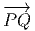 = Q − P. On pourrait aussi (mais on peut de toutes façons)
considérer la différence f(Q) − f(P) des valeurs prises par f en Q et
P. Dans le cas de M = ℝn et lorsque Q (coordonnées x′) tend vers P
(coordonnées x), le théorème des accroissement finis (ou celui de Taylor) nous dit
que
f(x′) − f(x) = (x′− x)i∂∕∂xif(x) + … = vi∂∕∂xif(x) + … où les nombres
vi = (x′−x)i ne sont autres que les composantes du vecteur  = Q−P dans le
repère où P et Q ont des composantes xi et x′i. Dans le cas des variétés,
l’expression (x′− x)i∂∕∂xif(x) a encore un sens. En effet, choisissons tout
d’abord une carte, et notons v la quantité v = vi∂∕∂xi. Si x(P) sont les
coordonnées de P dans le domaine de la carte x, on pourra considérer la
quantité
= Q−P dans le
repère où P et Q ont des composantes xi et x′i. Dans le cas des variétés,
l’expression (x′− x)i∂∕∂xif(x) a encore un sens. En effet, choisissons tout
d’abord une carte, et notons v la quantité v = vi∂∕∂xi. Si x(P) sont les
coordonnées de P dans le domaine de la carte x, on pourra considérer la
quantité
![|-----------------|
| i-∂- |
-v[f] =-v-∂xif(x)-](source4x.png)
qui
nous décrit la variation - au premier ordre – de f dans ce que nous avons envie
d’appeler la direction v. La quantité précédente v[f] est elle-même une
fonction, qui, lorsqu’elle est évaluée au point P nous fournit un nombre
v[f](P).
1.4.2 Vecteurs, espace tangent et champs de vecteurs
Dans le cas des variétés, il est clair que les vecteurs ne peuvent pas être définis
comme des bi-points (ou des classes d’équivalences de bi-points), par contre, rien ne
nous empêche d’utiliser leur propriété de machine-à-fabriquer-des-dérivées-partielles
pour les définir de façon générale. Dans le domaine d’une carte x, un champ de
vecteurs sera donc défini comme un opérateur de différentiation d’ordre 1 à
savoir
Cet
opérateur agit sur les fonctions f ∈ C∞(M) pour donner d’autres fonctions
(puisque v[f] ∈ C∞(M)). Le champ de vecteurs v ainsi défini est indépendant de
la carte choisie.
L’opérateur différentiel d’ordre 1 noté v = vi∂∕∂xi est un champ de vecteurs
car les vi sont des fonctions sur M alors que v(P) = vi(P)∂∕∂xi est un vecteur au
point P, de composantes vi(P).
En géométrie élémentaire des courbes, la tangente en P à une courbe
(différentiable) est définie comme limite des sécantes PQ lorsque Q tends vers
P ; cela signifie que les vecteurs  tendent vers un vecteur tangent à la courbe.
En géométrie des variétés différentiables, on pourrait faire de même, à
condition de plonger notre variété (par exemple la sphère usuelle S2) dans
un espace plus grand (par exemple ℝ3) et voir ainsi, un vecteur de S2
comme un vecteur tangent à la sphère (et donc “sortant” de celle-ci) ; mais
une telle contrainte serait précisément contraire à l’idée même du calcul
intrinsèque sur les variétés, calcul qui se veut, justement, indépendant de
l’existence de plongements possibles. La définition adoptée précédemment est
bien indépendante de la présence d’un espace affine ambiant, mais il est
néanmoins commode, pour l’intuition, de visualiser nos vecteurs de façon
élémentaire et d’adopter une terminologie qui nous rappelle des situations bien
connues. Pour ces raisons, un vecteur de la variété M en un point P est
souvent appelé vecteur tangent en P, l’ensemble de ces vecteurs se note
T(M,P) ou encore TP M et est désigné sous le nom de espace tangent à
M en P ; on a donc un espace tangent en chaque point de la variété.
L’ensemble des vecteurs eux-mêmes (tous les vecteurs), se note T(M) ou
simplement TM et est appelé l’espace tangent à M ou encore, pour une
raison qu’on expliquera ultérieurement le fibré tangent à M (“tangent
bundle”). Un élément de TM est donc la donnée (P,u) d’un point de M et
d’un vecteur en ce point. Attention, il faut bien distinguer les notions
de vecteur en un point et de champs de vecteurs (mais nous allons très
souvent oublier cette distinction). L’ensemble des champs de vecteurs se
note ΓTM. Notons que cet espace est un espace vectoriel (de dimension
infinie), et T(M,P) est un espace vectoriel de dimension n (supposant que
M est elle-même de dimension n), alors que TM n’est pas un espace
vectoriel du tout (on ne peut pas additionner un vecteur en P avec un
vecteur en Q !). On verra que TM, que l’on peut considérer comme une
collection d’espaces vectoriels paramètrisés par les points de M, possède la
structure d’espace fibré vectoriel (cette structure sera définie et étudiée plus
loin). Notons que l’espace TM est lui-même une variété différentiable.
Supposons que M soit une variété de dimension n, un point P de M est en
effet caractérisé (dans une certaine carte) par n composantes xμ et un
“point” (c’est à dire un élément) de TM consistera en la donnée d’un
couple (P,u) ∈ M × T(M,P) c’est à dire 2n nombres (n nombres xμ et n
composantes du vecteur u dans une base choisie de l’espace vectoriel T(M,P).
Ainsi TM est une variété de dimension 2n. Intuitivement, on peut se
représenter par exemple TS2 comme la donnée d’une infinité de plans
tangents collés à la sphère ; il s’agit, dans ce cas d’une variété de dimension
4.
tendent vers un vecteur tangent à la courbe.
En géométrie des variétés différentiables, on pourrait faire de même, à
condition de plonger notre variété (par exemple la sphère usuelle S2) dans
un espace plus grand (par exemple ℝ3) et voir ainsi, un vecteur de S2
comme un vecteur tangent à la sphère (et donc “sortant” de celle-ci) ; mais
une telle contrainte serait précisément contraire à l’idée même du calcul
intrinsèque sur les variétés, calcul qui se veut, justement, indépendant de
l’existence de plongements possibles. La définition adoptée précédemment est
bien indépendante de la présence d’un espace affine ambiant, mais il est
néanmoins commode, pour l’intuition, de visualiser nos vecteurs de façon
élémentaire et d’adopter une terminologie qui nous rappelle des situations bien
connues. Pour ces raisons, un vecteur de la variété M en un point P est
souvent appelé vecteur tangent en P, l’ensemble de ces vecteurs se note
T(M,P) ou encore TP M et est désigné sous le nom de espace tangent à
M en P ; on a donc un espace tangent en chaque point de la variété.
L’ensemble des vecteurs eux-mêmes (tous les vecteurs), se note T(M) ou
simplement TM et est appelé l’espace tangent à M ou encore, pour une
raison qu’on expliquera ultérieurement le fibré tangent à M (“tangent
bundle”). Un élément de TM est donc la donnée (P,u) d’un point de M et
d’un vecteur en ce point. Attention, il faut bien distinguer les notions
de vecteur en un point et de champs de vecteurs (mais nous allons très
souvent oublier cette distinction). L’ensemble des champs de vecteurs se
note ΓTM. Notons que cet espace est un espace vectoriel (de dimension
infinie), et T(M,P) est un espace vectoriel de dimension n (supposant que
M est elle-même de dimension n), alors que TM n’est pas un espace
vectoriel du tout (on ne peut pas additionner un vecteur en P avec un
vecteur en Q !). On verra que TM, que l’on peut considérer comme une
collection d’espaces vectoriels paramètrisés par les points de M, possède la
structure d’espace fibré vectoriel (cette structure sera définie et étudiée plus
loin). Notons que l’espace TM est lui-même une variété différentiable.
Supposons que M soit une variété de dimension n, un point P de M est en
effet caractérisé (dans une certaine carte) par n composantes xμ et un
“point” (c’est à dire un élément) de TM consistera en la donnée d’un
couple (P,u) ∈ M × T(M,P) c’est à dire 2n nombres (n nombres xμ et n
composantes du vecteur u dans une base choisie de l’espace vectoriel T(M,P).
Ainsi TM est une variété de dimension 2n. Intuitivement, on peut se
représenter par exemple TS2 comme la donnée d’une infinité de plans
tangents collés à la sphère ; il s’agit, dans ce cas d’une variété de dimension
4.
1.4.3 Règle de Leibniz
Soit v un champ de vecteurs. Il pourra donc s’écrire localement (c’est à dire dans
une certaine carte) v = vμ∂∕∂xμ. Si f et g désignent deux fonctions sur M, il est
clair que
Par
conséquent on aura plus généralement :
On
retrouve la règle usuelle de dérivation d’un produit. De façon générale, si
A est une algèbre associative, on dit que v est une dérivation, lorsque
v est une application linéaire (un “opérateur”) de A dans A telle que
v[fg] = v[f]g + fv[g] avec f,g ∈A. Les champs de vecteurs sont des
dérivations de l’algèbre associative (et commutative) C∞(M). On pourrait
d’ailleurs les définir directement par cette propriété. En d’autres termes,
ΓTM = DerC∞(M).
1.4.4 Crochet de deux champs de vecteurs
Notons que le produit de deux vecteurs n’est pas un vecteur (produit
défini par composition de l’action des vecteurs sur les fonctions) mais
un opérateur différentiel d’ordre 2. En effet, soient v = vμ∂∕∂xμ
et w = wν∂∕∂xν deux champs de vecteurs (attention les vμ est les
wν n’ont aucune raison d’être constants dans la carte choisie). Alors,
(vw)[f] = v[w[f]] = v[wν∂∕∂xν[f]] = vμ∂∕∂xμ[wν∂∕∂xν[f]] = vμ∂∕∂xμ[wν]∂∕∂xν[f]+vμwν∂2∕∂xμ∂xν[f]
Par contre, le commutateur (notation crochet) de deux champs de vecteurs, défini
par
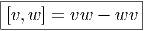
est
un champ de vecteurs. Pour s’en convaincre, il suffit de vérifier que c’est bien
un opérateur différentiel d’ordre un. Le petit calcul précédent montre
immédiatement que les dérivées secondes disparaissent lorsqu’on calcule la
différence et qu’il reste
La
définition précédente du crochet [v,w] = vw − wv de deux champs de vecteurs
implique de façon immédiate les deux propriétés suivantes :
Antisymétrie
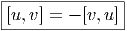
Identité de Jacobi
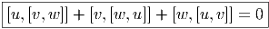
Une algèbre (évidemment non associative) où les éléments vérifient ces deux
identités est appelée une algèbre de Lie. Notons qu’une algèbre de Lie est, en
particulier, un espace vectoriel. Nous pouvons donc conclure ce paragraphe en
disant “l’ensemble des champs de vecteurs est une algèbre de Lie (de dimension
infinie)”.
1.4.5 Repère naturel associé à une carte
On appelle repère sur U ⊂ M, la donnée, en chaque point P ∈ U, d’une base de
l’espace vectoriel tangent en P. Un repère est en général “local”, c’est à
dire qu’on n’essaye pas, ou qu’on ne peut pas choisir U = M. Si xμ(P)
désignent les composantes de P dans une carte locale (U,x), on a déjà vu
que des vecteurs quelconques en P ou dans un voisinage de P peuvent
se décomposer sur les vecteurs ∂∕∂xμ. En d’autres termes, l’ensemble
des
fournit un repère. Ce repère est appelé repère naturel associé à la carte x ou aux
coordonnées xμ (“coordinate frame”). Par suite de la propriété de commutativité
des dérivées partielles, il est évident que ∂2∕∂xμ∂xν − ∂2∕∂xν∂xμ = 0. En
d’autres termes, si {eμ} désigne le repère naturel associé à la carte xμ, on
a
Une telle propriété caractérise, en fait, les repères naturels.
1.4.6 Changement de carte
Soit P ∈ M → y(P) ∈ ℝn un nouveau système de coordonnées. Si x désigne
l’ancien système, on notera également y : ℝn ℝn les fonctions de changement de
carte, on écrira donc y(P) = y(x(P)). Le repère naturel associé aux coordonnées
x est eμ = {∂∕∂xμ}, celui associé aux coordonnées y est e
μ′ = {∂∕∂yμ}. Nous
savons (depuis le secondaire) comment calculer la dérivée d’une fonction
composée, et donc
ℝn les fonctions de changement de
carte, on écrira donc y(P) = y(x(P)). Le repère naturel associé aux coordonnées
x est eμ = {∂∕∂xμ}, celui associé aux coordonnées y est e
μ′ = {∂∕∂yμ}. Nous
savons (depuis le secondaire) comment calculer la dérivée d’une fonction
composée, et donc
ce
qui, avec d’autres notations, s’écrit
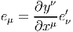
Notation
Il est souvent commode de noter tout simplement ∂μ les vecteurs du repère
naturel {eμ = ∂∕∂xμ} associés à la carte xμ. La décomposition d’un vecteur
quelconque v suivant ce repère s’écrit v = vμ∂
μ, où les vμ sont des nombres réels.
1.4.7 Repères mobiles (repères quelconques)
Dans un espace vectoriel, nous savons que les changements de base sont décrits
par des matrices “de passage” qui ne sont autres que des matrices inversibles Λαμ
quelconques. En géométrie différentielle, nous pouvons bien entendu faire de
même, à ceci près que la matrice Λαμ peut maintenant dépendre du point de la
variété. En d’autres termes, on a des matrices de passage dont les éléments sont
des fonctions sur la variété. Supposons que nous nous trouvons dans le domaine
d’une carte et que {∂μ} désigne le repère naturel associé. Ce repère, au point P,
constitue une base de l’espace tangent en P. Mais rien ne nous empêche de choisir
une autre base au même point. Si Λαμ désigne une matrice inversible
en P, alors la famille de vecteurs {eα = Λαμ∂
μ} est une autre base de
l’espace tangent TpM, c’est à dire un repère au point P. Un tel repère
est couramment désigné sous le nom de repère mobile. Notons qu’il n’y
a aucune raison, a priori, pour que ce repère coïncide avec le repère
naturellement associé à une autre carte que celle des xμ ; pour que cela soit le
cas, il faudrait qu’on puisse trouver une solution locale yα au système
d’équations ∂yα∕∂xμ = (Λ−1)
μα) où Λ−1 désigne la matrice inverse de la matrice
Λ. Le théorème garantissant l’existence de solutions pour une équation
différentielle aux dérivées partielles nous assure seulement l’existence d’une telle
solution yμ(xν)) le long d’une ligne, mais pas dans un voisinage ouvert de la
variété.
Soit {eα} un repère mobile. Nous avons déjà vu que le crochet (commutateur)
de deux champs de vecteurs est un champ de vecteurs. En particulier [eα,eβ] est
un champ de vecteurs qui, évalué au point P, appartient à l’espace tangent en ce
point et peut donc se décomposer sur une base de l’espace tangent en P. On
écrira donc
ou,
plus simplement
où
les fαβγ sont des fonctions sur la variété qu’on appelle fonctions de structure du
repère mobile (on ne doit pas les appeler constantes de structure car, précisément,
elles ne sont pas constantes en général !).
Par ailleurs, on posera souvent ∂α = eα même s’il n’existe pas de système de
coordonnées {yα} tel que ∂
α soit le repère naturel associé. Le lecteur doit donc se
méfier de cet abus d’écriture pourtant commode : il est des cas où ∂α et ∂β ne
commutent pas !
1.5 Tenseurs et formes extérieures sur les espaces vectoriels
Avant de passer au cas des variétés, il convient d’effectuer quelques rappels
d’algèbre linéaire puisque le passage du cas vectoriel au cas des variétés s’effectue
essentiellement en remplaçant un espace vectoriel unique par une famille d’espaces
vectoriels “de même nature”, paramètrisée par les points de la variété.
1.5.1 Algèbre tensorielle d’un espace vectoriel
Soit E un espace vectoriel de dimension finie n sur un corps K. On note E∗ son
dual, c’est à dire l’ensemble des formes K-linéaires sur E (applications linéaires
sur E à valeurs dans le corps de base, qu’on suppose commutatif). En terme de
composantes, soit {eμ} une base de E, et {eμ} la base duale correspondante de
E∗, on a
où
δνμ désigne le symbole de Kronecker (1 si μ = ν et 0 si μ≠ν).
L’espace vectoriel E de référence étant choisi, on écrira (comme le font
toujours les physiciens) les vecteurs de base avec des “indices en bas” et les
composantes avec des “indices en haut”. Bien entendu, la convention est
opposée pour ce qui concerne l’espace vectoriel dual. Par ailleurs nous
adoptons également la “convention d’Einstein”, c’est à dire que nous
effectuons toujours une sommation (le signe somme étant sous-entendu)
sur les indices répétés, lorsque l’un des indices est en position haute et
l’autre en position basse. Nous avons déjà utilisé cette convention dans les
sous-sections précédentes. Cette convention allège considérablement l’écriture des
formules.
Nous n’adopterons pas, dans cet ouvrage, la notation dyadique chère à Dirac
utilisant des bra et des ket car elle est peu usuelle en géométrie mais il est
peut-être utile d’y consacrer quelques lignes. Avec cette notation, les
éléments d’un certain espace vectoriel E choisi une fois pour toutes sont
notés avec des “kets”, par exemple |v〉 et les éléments du dual avec des
“bras”, par exemple 〈σ|. L’évaluation d’une forme sur un vecteur se note
ainsi naturellement sous forme de “bracket” 〈σ|v〉. La relation précédente
caractérisant la dualité entre une base de E et une base de E∗ s’écrira
donc
On
évalue ici une forme sur un vecteur et on obtient donc un nombre.
Par contre, la quantité |eν〉〈eμ| désigne une application linéaire de E dans E
puisque |eν〉〈eμ|e
ρ〉 = |eν〉δρμ = |e
ρ〉. Ainsi, en prenant |v〉 = vρ|e
ρ〉, on obtient
|eν〉〈eμ|v〉 = vμ|e
ν〉. Pour les mêmes raisons, l’écriture |v〉〈σ| désigne un opérateur
(alors que 〈σ|v〉 désigne un nombre).
L’identification des vecteurs de E avec des applications de K dans E (à v ∈ E
on associe l’application λ ∈ K → λv ∈ E) permet de bien comprendre cette
dualité et l’intérêt de la notation dyadique.
Si on se souvient “qui est qui”, et si on fait attention à l’ordre des termes, on
peut simplifier les notations à l’extrême et ne noter ni les produits tensoriels, ni
les symboles 〈| ou |〉. On écrira ainsi parfois de façon un peu provocante les
éléments de E sous la forme
(avec vμ ∈ ℝ) et les composantes à droite des vecteurs. On écrira parfois de même
les éléments du dual E∗ sous la forme
(avec σμ ∈ ℝ) et les composantes à gauche des formes linéaires. Si on ne note
explicitement ni les produits tensoriels ni les évaluations des formes sur les
vecteurs, on voit que σv = σμ(eμe
ν)vν = σ
μδνμvν = σ
μvμ est un nombre. Par
contre vσ est un opérateur (on pourrait l’écrire v ⊗ σ ∈ E ⊗ E∗), plus
précisément vσ = eμ(vμσ
ν)eν.
L’ordre adopté ci-dessus (le fait d’écrire les composantes —qui sont pourtant
des nombres !— à droite des vecteurs, etc) est particulièrement adapté aux
généralisations non commutatives de la géométrie différentielle – cela vient du
fait qu’en Occident, nous écrivons de gauche à droite !– mais rappelons nous que,
bien entendu, en géométrie ordinaire “commutative” (celle qui nous intéresse ici),
on peut toujours écrire v = eμvμ = vμe
μ. Un dernier mot de mise en garde :
lorsqu’on veut insister sur le fait que le vecteur eμ désigne une dérivation ∂μ, il est
préférable – pour ne pas se tromper ! – d’écrire les composantes du côté
gauche. Il en va de même en géométrie non commutative où champs
de vecteurs et dérivations d’algèbre sont de toute façon des concepts
différents puisque les premiers forment un module sur l’algèbre associative des
“fonctions” alors que les dérivations ne forment un module que sur le centre de
cette algèbre. Aucune ambiguïté n’est donc possible dans ce cadre plus
général.
On note ⊗
E l’algèbre tensorielle sur E c’est à dire la somme directe
⊕p=0∞E⊗p où E⊗p désigne la puissance tensorielle d’ordre p de E, c’est à dire
encore l’ensemble des applications multilinéaires d’ordre p sur E∗. Soit T ∈ E⊗p
alors on peut écrire
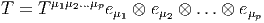
Les
éléments de ⊗
E sont encore appelés tenseurs contravariants (d’ordre p s’ils
appartiennent à E⊗p). Bien entendu, cet ensemble est non seulement un espace
vectoriel (de dimension infinie, les E⊗p étant de dimension (dimE)p mais encore
une algèbre pour le produit tensoriel. On peut ne pas écrire le symbole ⊗
explicitement dans l’expression précédente du tenseur T, car… “what else could it
be ?”, auquel cas,
De
la même façon, on note ⊗
E∗ l’algèbre tensorielle sur E∗ c’est à dire la somme
directe ⊕p=0∞E∗⊗p où E∗⊗p désigne la puissance tensorielle d’ordre p de E∗, c’est
à dire encore l’ensemble des applications multilinéaires d’ordre p sur E. Soit
T ∈ E∗⊗p alors on peut écrire
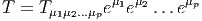
Les
éléments de ⊗
E∗ sont encore appelés tenseurs covariants (d’ordre p s’ils
appartiennent à E∗⊗p).
Bien entendu, nous pourrons considérer des tenseurs p-fois contravariants et
q-fois covariants (éléments T de E⊗p ⊗ E∗⊗q) et pour rester cohérents avec nos
notations, nous écrirons les produits tensoriels des vecteurs de E à gauche de ceux
de E∗, c’est à dire
ou
même encore
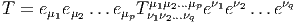
On
pose E∗⊗0 = E⊗0 = ℝ.
1.5.2 Algèbre extérieure d’un espace vectoriel. Produit extérieur
On notera Λk(E∗) l’espace vectoriel des formes k-linéaires alternées sur E.
Rappelons que T ∈ E∗⊗k est alternée lorsque T(v
1,…,vi…,vj,…,vk) = 0
dès que vi = vj,i≠j. Il est équivalent de dire (si le corps de base n’est
pas de caractéristique 2) que T est antisymétrique, c’est à dire que
T(v1,…,vi…,vj,…,vk) = −T(v1,…,vj…,vi,…,vk). On dit aussi que T est une forme
extérieure d’ordre k et que Λ(E∗) est l’algèbre extérieure construite sur
E∗.
-
L’antisymétriseur Alt
-
Le groupe symétrique Sk des substitutions sur k éléments opère de
façon évidente sur les k-uplets de vecteurs. Soit s ∈Sk
Grâce à cette action, on peut définir un opérateur Alt qui projette les
tenseurs covariants d’ordre k sur les formes k-linéaires antisymétriques
où ϵ désigne la parité de la substitution s. On peut vérifier les
propriétés suivantes du projecteur Alt. Tout d’abord, c’est effectivement
un projecteur de E∗⊗p sur Λp(E∗), par ailleurs, si ω,η et θ désignent
trois tenseurs de ⊗
E, alors Alt(Alt(ω ⊗η) ⊗θ) = Alt(ω ⊗Alt(η ⊗θ)
et on peut donc écrire cette quantité sous la forme Alt(ω ⊗η ⊗θ). La
présence du k! dans la définition de Alt est indispensable pour que la
propriété précédente d’associativité soit vérifiée.
-
Le produit extérieur ∧
-
Soient ω ∈ Λk(E∗) et η ∈ Λp(E∗). On définit Le produit extérieur ∧,
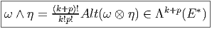
Propriétés :
∧ est associatif et distributif à droite et à gauche sur +
aω ∧ η = ω ∧ aη = a(ω ∧ η) avec a ∈ ℝ
ω ∧ η = (−1)(pk)η ∧ ω En particulier, si ω est impaire, ω ∧ ω = 0
Ces propriétés font de Λ(E∗) = ⊕
k=0nΛk(E∗) une algèbre
super-commutative (une algèbre commutative ℤ2-graduée).
De plus, si ω ∈ Λk(E∗), η ∈ Λp(E∗) et θ ∈ Λq(E∗), alors
La présence des diverses factorielles dans les expressions ci-dessus,
aussi bien dans la définition de Alt que dans celle du produit extérieur,
disparaît dans bien des cas ; par exemple, le lecteur pourra se
convaincre que si {θμ} désigne une base de 1−formes, les définitions
précédentes conduisent aux expressions suivantes :
et
Il faut signaler ici qu’il existe une autre définition du produit extérieur où
les membres de droite des expressions précédentes sont respectivement
multipliés par 1∕2! et 1∕3! La définition adoptée ici est telle que si {eμ}
désigne une base de l’espace vectoriel considéré et {θμ} la base duale
correspondante, nous avons
-
Dépendance et indépendance linéaire des formes extérieures
-
Désignons par {θμ}
μ∈{1,2…n} une base de E∗. Considérons un monôme tel
que θμ1 ∧ θμ2 ∧… ∧ θμk. Par suite de l’antisymétrie du produit extérieur, il
est clair qu’une telle expression est nulle dès qu’un vecteur de base est
répété deux fois (c’est une autre façon de dire qu’un tenseur complètement
antisymétrique est nul dès que deux indices sont répétés). Par ailleurs,
deux monômes de ce type qui ne diffèrent que par l’ordre des termes sont
soit égaux, soit opposés. On peut donc supposer que les indices sont
ordonnés de la façon suivante : 1 ≤ μ1 < μ2 < … < μk ≤ n. Enfin, il est
facile de voir que toute forme extérieure d’ordre k, c’est à dire tout
élément de Λk(E∗) peut se décomposer sur des monômes de ce
type. La dimension de l’espace vectoriel Λk(E∗) est donc (
kn). Bien
entendu, lorsque k > n, toute forme extérieure est nulle (deux indices
sont alors automatiquement répétés !). La dimension de l’algèbre
extérieure est donc Σk=0n
kn = 2n. Pour conclure ce paragraphe, citons
sans démonstration (mais elle est facile) le petit résultat bien utile
suivant : Les formes linéaires ω1,ω2,…,ωp sont indépendantes si
et seulement si leur produit extérieur ω1 ∧ ω2 ∧… ∧ ωp est non
nul.
-
Ecriture des formes extérieures
-
Une forme extérieure ω d’ordre k peut s’écrire de trois façons possibles.
Tout d’abord, on peut la considérer comme un tenseur k fois covariant, et ,
à ce titre, on peut la décomposer (existence et unicité) sur la base des
tenseurs d’ordre k. On peut donc écrire
On peut aussi la décomposer sur la base des formes extérieures
θμ1 ∧ θμ2 ∧… ∧ θμk, à condition d’ordonner les indices (sinon, la famille
précédente est génératrice mais n’est pas libre et donc n’est pas une
base !). La deuxième égalité utilise une notation |…| qui signifie que non seulement
on utilise la convention d’Einstein (sommation sur les indices répétés) mais
qu’on décide d’ordonner les indices.
La troisième écriture — de loin, la plus utilisée — est celle où on
décompose la forme ω (toujours la même) sur la famille génératrice des
formes extérieures θμ1 ∧θμ1 ∧…∧θμk mais sans ordonner les indices ! Bien
entendu, pour un ensemble d’indices donnés (pour un ensemble de vecteurs
de base donné), k! des monômes précédents vont être égaux (ou opposés)
et il faudra “corriger” le développement de ω en rajoutant un 1∕k! devant
l’expression. Ainsi donc,
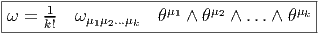
Notons que la première écriture contient nk termes (et il y a unicité de la
décomposition), la seconde contient n! ____
k!(n−k)! termes (et il y a unicité de la
décomposition), la troisième contient nk termes (mais il n’y a pas
unicité de la décomposition). Il est quelquefois utile, pour alléger les
notations, d’introduire des multi-indices M = (μ1μ2…μk). Alors, les deux
décompositions précédentes s’écrivent
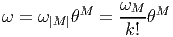
1.5.3 Produit intérieur d’une forme par un vecteur
Soit E un espace vectoriel et Λ(E∗) l’algèbre extérieure sur son dual. Nous avons
défini précédemment le produit extérieur, qui est une loi de composition interne à
l’algèbre extérieure. Au contraire, l’opération que nous allons maintenant définir,
le produit intérieur n’est pas un produit au sens usuel du terme, en effet, il
associe, à la donnée d’une forme extérieure ω d’ordre k (un élément de Λk(E∗))
et d’un vecteur v (un élément de E) une autre forme différentielle, mais
maintenant d’ordre k − 1, c’est à dire un élément de Λk−1(E∗). Cette nouvelle
forme est simplement obtenue en “contractant” ω et v, plus précisément, en
écrivant
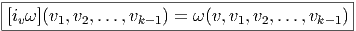
c’est à dire encore, en terme de composantes et en notant α = ivω,
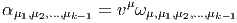
Cette opération est quelquefois notée v⌊ω au lieu de ivω.
Il résulte de l’antisymétrie des formes extérieures que deux opérations iv et iw
anticommutent, en particulier, le carré de l’opération iv est nul :iviwω = −iwivω
et ivivω = 0, ce qu’on écrit simplement
Le
produit intérieur est une antidérivation de l’algèbre extérieure, c’est à dire que
pour ω1 ∈ Λk1(E∗) et ω
2 ∈ Λk2(E∗), nous avons un analogue ℤ
2-gradué de la règle
de Leibniz
En
particulier, si v = eμi est un vecteur de base et si ω est égal au produit extérieur
d’un certain nombre de vecteurs de la base duale, l’expression précédente donne
simplement : où le symbole ^ désigne l’omission du symbole au dessus duquel il est situé.
1.5.4 Transformation du produit extérieur et du produit intérieur par
endomorphismes
Soit f∼ un endomorphisme de l’espace vectoriel E et soit f∼ l’endomorphisme
dual (aussi appelé transposé). Rappelons ce que cela signifie : f∼ est une
application linéaire de E dans E et f∼ est une application linéaire du dual
E∗ dans lui-même définie comme suit : soient v ∈ E et θ ∈ E∗, alors
f∼(θ)(v) = θ(f
∼(v)), c’est à dire encore f∼(θ) = θof
∼. On peut alors vérifier
aisément que
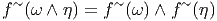
et
que
Remarque sur les notations : celle utilisant ∗ et non ∼ est beaucoup plus
utilisée ; cela dit, le symbole ∗ est “trop” utilisé et peut quelquefois prêter à
confusion puisqu’il peut aussi bien désigner la conjugaison complexe, la dualité de
Hodge, qu’une involution quelconque... Par ailleurs le “tilde” est sous-employé (il
désigne traditionnellement l’expression matricielle de f∼), il en va de même de la
“flèche”. Dans le cadre de cet ouvrage, nous écrirons indifféremment
f∗ = f∼ =  et f∗ = f∼ =
et f∗ = f∼ =  . Notons pour finir que la notation f
∼ est en
général inutile dans le cas des espaces vectoriels puisqu’on peut écrire tout
simplement f = f∼, mais dans le cas des variétés, nous verrons que f≠f∼≠f∼ !
. Notons pour finir que la notation f
∼ est en
général inutile dans le cas des espaces vectoriels puisqu’on peut écrire tout
simplement f = f∼, mais dans le cas des variétés, nous verrons que f≠f∼≠f∼ !
1.6 Formes différentielles
1.6.1 Définition
Nous avons déjà défini la notion de vecteur au point P d’une variété
différentiable M ainsi que la notion de champ de vecteurs. L’ensemble des
vecteurs au point P se notant TP M, l’ensemble de tous les vecteurs (le fibré
tangent) se notant TM et l’ensemble des champs de vecteurs se notant ΓTM, on
obtient, par dualité, les notions qui suivent. Tout d’abord l’espace vectoriel dual
de TP M se note TP ∗M ; ses éléments sont donc des formes extérieures de
degré 1, ou plus simplement, des “1-formes” . L’ensemble T∗M, baptisé fibré
cotangent, est l’ensemble de toutes les 1-formes, lorsque le point P décrit M,
c’est-à-dire T∗M = ∪
p∈MTP ∗M.
Une forme différentielle (en degré un) est tout simplement un champ de
formes extérieures, c’est-à-dire une application qui à tout point P ∈ M associe
une forme extérieure en ce point. Nous verrons un peu plus loin la raison d’être de
cette terminologie. L’ensemble des formes différentielles de degré 1 peut se noter
ΓT∗M ou Ω1M.
Toutes les constructions algébriques du paragraphe précédent (tenseurs et
formes extérieures sur un espace vectoriel) sont en particulier valables ici
puisqu’on peut choisir comme espace vectoriel, l’espace vectoriel tangent au point
P, c’est-à-dire TP M. Les tenseurs p fois contravariants, q fois covariants au point
P sont donc des éléments de (TP M)⊗p ⊗ (T
P ∗M)⊗q. Si on considère tous les
tenseurs de ce type (c’est-à-dire qu’on effectue la réunion de ces espaces lorsque
P décrit M) on obtient (TM)⊗p ⊗ (T∗M)⊗q et on peut bien entendu
considérer des champs de tenseurs de ce type, dont l’ensemble constitue
Γ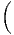(TM)⊗p ⊗ (T∗M)⊗q .
.
Le cas particulier des tenseurs complètement antisymétriques est
particulièrement intéressant. On notera Λ(TP M)∗ = ⊕
kΛk(T
P M)∗ l’algèbre
extérieure sur le dual de l’espace vectoriel TP M et Λ(T∗M) = ∪
p∈MΛ(TP M)∗.
Les formes différentielles de degré q sont des “sections” de Λq(T∗M)
c’est-à-dire des champs de formes extérieures de degré q. Leur ensemble peut se
noter, bien entendu, ΓΛq(T∗M). Lorsque q = 1, on a Λ1(T∗M) = T∗M. Pour
alléger la notation, on décide de poser Ωq(M) = ΓΛq(T∗M). On sait que q ne
peut pas être trop grand ; plus précisément 0 ≤ q ≤ n avec n = dim M.
Attention, ne pas confondre la dimensionalité de Λ(TP M)∗ – qui est 2n – et celle
de ΩM = ⊕q=0nΩqM, qui est infinie. Notons que les éléments de Ω∘M sont
simplement les fonctions sur M c’est-à-dire Ω0M = C∞(M). Nous avons
déjà étudié les propriétés du produit extérieur et il n’y a rien à rajouter
ici : le produit extérieur α ∧ β de deux formes différentielles α et β est
obtenu en “globalisant” la définition déjà connue pour chaque point P de
M.
ΩM, munie des opérations de multiplication par un scalaire, d’addition et de
produit extérieur, devient ainsi une algèbre. Cette algèbre n’est pas commutative
mais elle est commutative graduée puisque α∧β = (−1)#α#ββ ∧α où #α désigne
le degré de α. On appelle cette algèbre algèbre de De Rham des formes
différentielles.
Pour ce qui est de l’écriture locale d’une forme différentielle, il n’y a pas
grand-chose à rajouter non plus puisque nous savons déjà décomposer une forme
extérieure sur une base de l’espace vectoriel TP ∗M. Le seul problème qui
se pose est de savoir comment la base en question varie avec le point
P.
Soient xμ(P) les coordonnées de P dans une carte locale. On sait que
l’ensemble des vecteurs eμ = ∂ __
∂xμ fournit le repère naturel associé à cette carte,
c’est-à-dire que {eμ} est une base de l’espace tangent en tout point d’un voisinage
de P.
On désignera par {dxμ} la base duale correspondante et on écrira avec des
indices “en haut” {eμ = dxμ}. On peut, si on veut, “visualiser” dxμ par “un petit
accroissement” , mais ceci présente un intérêt purement psychologique ; en effet
dxμ est défini par dualité et donc par la relation 〈dxμ, ∂__
∂xν〉 = δνμ. De la même
façon qu’on avait un repère naturel  associé aux coordonnées xμ, on a donc
aussi un corepère naturel {dxμ}.
associé aux coordonnées xμ, on a donc
aussi un corepère naturel {dxμ}.
Dans le cas de l’espace tangent, nous avons défini la notion de repère mobile
{eα} (qui était issu de ∂ __
∂xμ par changement de base arbitraire), nous aurons donc
aussi un corepère mobile {eα} défini, en chaque point P de la carte, comme la
base duale de {eα}, c’est-à-dire 〈eα, e
β〉 = δβα.
Venons-en maintenant à la notion de différentielle proprement dite. Pour ce
qui est des fonctions (0-formes), on pose bien entendu
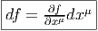
La 1-forme df peut être évaluée sur le champ de vecteurs v = vμ ∂ __
∂xμ. On
obtient
On
voit que le membre de droite n’est autre que v[f]. Ainsi donc,
On
notera souvent df(v) au lieu de 〈df,v〉, l’évaluation de la forme df sur le vecteur
v.
La règle de Leibniz usuelle pour la différentielle d’un produit de deux
fonctions, à savoir
résulte immédiatement de la propriété, pour les champs de vecteurs, d’être des
dérivations de l’algèbre des fonctions.
Nous allons généraliser aussi bien la définition de d que la règle de Leibniz à
des formes différentielles de degré supérieur.
1.6.2 La différentielle extérieure d
Soit ω une k-forme différentielle ; on va définir un opérateur d qui, appliqué à
ω, crée une (k + 1)-forme. Cet opérateur est désigné sous le nom de différentielle
extérieure ou différentielle de De Rham.
Définition 1. La forme différentielle dω peut se définir directement par son
action sur tout (k + 1)-uplet {v1,v2,…,vk+1} de champs de vecteurs, en posant
où le symbole^désigne l’omission de l’argument correspondant.
Cette définition possède un intérêt pratique certain. Pour se rappeler des
signes, on peut signaler le moyen mnémotechnique suivant : le premier
type de termes s’obtient en faisant passer les vecteurs vi devant ω et
en comptant un signe “−” chaque fois que vi “traverse” un des autres
vecteurs ; le second type de terme s’obtient en choisissant une paire vi,vj et
en la faisant passer en position 1 et 2 de la forme ω, tout en utilisant
l’antisymétrie de ω lorsqu’on effectue des transpositions. On remplace alors la
paire (vi,vj) par son crochet [vi,vj] et on multiplie le tout par un signe
−1.
Exemple 1 : Soit f une 0-forme, c’est à dire une fonction sur M. La définition
ci-dessus conduit à
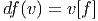
ce
qu’on savait déjà.
Exemple 2 : Soit ω, une 1-forme, alors
Si
u = ∂ __
∂xμ et v = ∂ __
∂xν, on trouve simplement que les composantes de F = dω sont
données par Fμν = ∂μων − ∂νωμ.
Le lecteur aura reconnu, dans le cas de la dimension 4, l’expression du champ
électromagnétique (le tenseur F ) en terme du (quadri) potentiel vecteur ω. Soit
dit en passant, il faut incorporer le troisième terme (l’évaluation de ω sur le
commutateur [u,v]) lorsqu’on veut exprimer le champ F = dω dans un repère
quelconque.
Exemple 3 : Soit ω, une 2-forme, alors
En utilisant la définition de d, donnée ci-dessus, on montre immédiatement
que, si ω1 ∈ Ωk1 et ω
2 ∈ Ωk2, alors
De la même façon, on montre que
Les deux propriétés ci-dessus sont absolument fondamentales et peuvent
même servir à définir l’opérateur d lui même.
Définition 2. d est l’unique opérateur (application linéaire) de ΩkM dans
Ωk+1M tel que, pour tout k, ω
1 ∈ Ωk1, ω
2 ∈ Ωk2, k = k
1 + k2, on ait
d(ω1 ∧ ω2) = dω1 ∧ ω2 + (−1)k1ω
1 ∧ dω2 et d2 = 0. En d’autre terme d étend la
définition usuelle de différentiation des fonctions en une dérivation graduée de
carré nul de l’algèbre ΩM.
En physique, si ω désigne le quadri-potentiel vecteur, alors, F = dω obéit
automatiquement à l’équation dF = 0, puisque d2 = 0. Ceci nous donne donc la
moitié des équations de Maxwell (les équations sans source).
Il existe une troisième définition possible de l’opérateur d, définition qui est
également d’un intérêt pratique certain. La voici :
Définition 3. Relativement à un choix de coordonnées on peut écrire ω = ωIdxI,
où I est un multi-indice et ωI est une 0-forme, c’est-à-dire une fonction. On
définit d’abord d sur les fonctions dωI = ∂ωI
∂xμdxμ. Ensuite, plus généralement, on
pose dω = dωI ∧ dxI.
Nous venons de voir trois définitions équivalentes possibles de l’opérateur d.
Toutes les trois sont utiles et nous laissons au lecteur le soin de démontrer
l’équivalence des définitions.
Terminons par un petit calcul élémentaire (clin d’œil au cours
d’électromagnétisme). Soit A = Aμdxμ une 1-forme (le quadri-potentiel vecteur).
Le champ de Maxwell est défini par
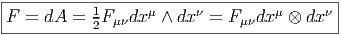
Or
Ainsi
1.6.3 L’équation de Maurer-Cartan pour un repère mobile
Soit {eα} un repère mobile et fβγα les fonctions de structure correspondantes,
c’est-à-dire que ce repère vérifie l’équation de structure : [eβ,eγ] = fβγαe
α.
Soit {eα} le co-repère mobile correspondant défini, comme on l’a vu, par
dualité. Le co-repère vérifie également une équation de structure (souvent
désignée sous le nom d’équation de Maurer-Cartan)
La
façon la plus simple de démontrer cette identité est de la vérifier en l’évaluant
sur un couple (eδ,eϵ) de vecteurs du repère mobile. D’une part, en effet,
Les deux premiers termes sont nuls puisqu’on dérive des constantes !
D’autre part
D’où le résultat.
1.6.4 Produit intérieur d’une forme par un champ ou vecteurs
Cette opération généralise celle étudiée précédemment (produit intérieur d’une
forme extérieure par un vecteur). On associe, à une k forme ω et un vecteur v une
k − 1 forme notée ivω. La définition en est très simple : pour une 1-forme, c’est
tout simplement l’évaluation. C’est-à-dire ivω = ω(v) = 〈ω,v〉. Pour une k-forme,
on généralise simplement en contractant l’indice du vecteur v avec le premier
indice de la forme ω ; en d’autres termes (et sans utiliser d’indices) ivω est la
k − 1 forme définie par
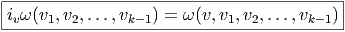
Si
α = ivω on a évidemment αμ1,μ2,…,μk−1 = vνω
νμ1,μ2,…,μk−1. Il s’agit d’une opération
très élémentaire généralisant l’évaluation d’une forme sur un vecteur. L’opération
iv, de ΩkM dans Ωk−1M est, comme l’opération d, une dérivation graduée et de
carré nul de l’algèbre extérieure. La propriété d’être de carré nul est une
conséquence immédiate du fait que les formes différentielles sont des objets
antisymétriques et donc s’annulent dès que deux arguments sont égaux. La
propriété d’anti-dérivation, c’est-à-dire
où
k est le degré de ω1 est également une conséquence immédiate de la définition. La
différence essentielle entre l’opération d et l’opération iv est que ces deux
opérations vont dans des sens différents (iv fait baisser le degré d’une unité alors
que d l’élève). Notons que la définition de iv dépend du choix du vecteur
v.
1.7 Application tangente et cotangente
Soit f un difféomorphisme de la variété M, ou, plus généralement, une
application différentiable de M (de dimension m) dans N (de dimension n). En
coordonnées locales, f s’écrit à l’aide de n fonctions fα de m variables
yα = fα(xμ). La matrice jacobienne de cette application est la matrice (n,m) des
éléments ∂yα∕∂xμ. Une telle matrice définit une application linéaire de l’espace
vectoriel tangent à M au point P dans l’espace tangent à N au point f(P). Soit
{∂μ} un repère naturel de M défini dans un voisinage de P et {∂α} un repère
naturel de N défini dans un voisinage de f(P). Soit v ∈ TP (M), on peut écrire
v = vμ∂
μ. On obtient un vecteur w ∈ Tf(P)(N) en écrivant w = wα∂
α
avec

Cette application, dite application linéaire tangente (ou “push forward”) se
note, suivant les auteurs f∗, Tf, f∼, ou même  et on dit que w =
et on dit que w =  (v) est
l’image directe de v. On peut bien entendu définir directement 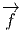 sans utiliser de
systèmes coordonnés. De façon générale, à toute application différentiable
f : M → N, on associe une application linéaire tangente
(v) est
l’image directe de v. On peut bien entendu définir directement 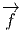 sans utiliser de
systèmes coordonnés. De façon générale, à toute application différentiable
f : M → N, on associe une application linéaire tangente  : TM → TN, et si
v ∈ TP M, alors
: TM → TN, et si
v ∈ TP M, alors  [v] ∈ Tf(P)M.
Remarque : on peut toujours prendre l’image d’un vecteur tangent par
l’application tangente, mais l’image d’un champ de vecteurs v sur M ne définit
pas nécessairement un champ de vecteur sur N ; d’une part, en effet, rien ne
prouve qu’un point Q quelconque de N soit nécessairement dans l’image de f, et
par ailleurs, même si f est surjective, rien ne dit, dans le cas où deux
points distincts P1 et P2 seraient tels que f(P1) = f(P2) que l’image par
[v] ∈ Tf(P)M.
Remarque : on peut toujours prendre l’image d’un vecteur tangent par
l’application tangente, mais l’image d’un champ de vecteurs v sur M ne définit
pas nécessairement un champ de vecteur sur N ; d’une part, en effet, rien ne
prouve qu’un point Q quelconque de N soit nécessairement dans l’image de f, et
par ailleurs, même si f est surjective, rien ne dit, dans le cas où deux
points distincts P1 et P2 seraient tels que f(P1) = f(P2) que l’image par
 du vecteur v(P1) coïncide avec l’image par 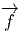 du vecteur v(P2). En
fait, pour une application differentiable surjective f : M → N donnée,
il est commode d’introduire la notion de champ de vecteurs projetable
: v ∈ Γ(TM) est dit projetable (par f) si, pour tout Q ∈ N et pour
toute paire (P1,P2) de points de M tels que Q = f(P1) = f(P2) on ait
du vecteur v(P1) coïncide avec l’image par 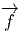 du vecteur v(P2). En
fait, pour une application differentiable surjective f : M → N donnée,
il est commode d’introduire la notion de champ de vecteurs projetable
: v ∈ Γ(TM) est dit projetable (par f) si, pour tout Q ∈ N et pour
toute paire (P1,P2) de points de M tels que Q = f(P1) = f(P2) on ait
 [v(P1)] = 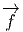[v(P2)] ; dans ce cas on obtient bien un champ de vecteur sur
N.
La même matrice jacobienne (∂yα∕∂xμ) définit également une application
linéaire de l’espace cotangent à N au point f(P) dans l’espace cotangent à M au
point P. En effet, soit τ ∈ Tf(P)∗N, alors τ = τ
αdyα. L’image de la forme τ est la
forme σ ∈ TP ∗M, avec σ = σ
μdxμ et
[v(P1)] = 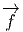[v(P2)] ; dans ce cas on obtient bien un champ de vecteur sur
N.
La même matrice jacobienne (∂yα∕∂xμ) définit également une application
linéaire de l’espace cotangent à N au point f(P) dans l’espace cotangent à M au
point P. En effet, soit τ ∈ Tf(P)∗N, alors τ = τ
αdyα. L’image de la forme τ est la
forme σ ∈ TP ∗M, avec σ = σ
μdxμ et

Cette application, qu’on pourrait appeler application linéaire cotangente ,
(ou “pull back”) et noter f∗, T∗f, f∼, ou même  n’est donc autre que
la transposée de l’application linéaire tangente
n’est donc autre que
la transposée de l’application linéaire tangente  au point P ∈ M :
elle envoie les co-vecteurs de N au point f(P) (i.e. les 1-formes de N au
point f(P) ) dans les co-vecteurs de M au point P. Si τ ∈ Tf(P)∗N, alors
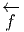(τ) = τ ∘
au point P ∈ M :
elle envoie les co-vecteurs de N au point f(P) (i.e. les 1-formes de N au
point f(P) ) dans les co-vecteurs de M au point P. Si τ ∈ Tf(P)∗N, alors
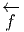(τ) = τ ∘ ∈ TP ∗M. Cette application de T
f(P)∗N dans T
P ∗M ne peut
manifestement pas, en général, se généraliser à une application de T∗N
dans T∗M ; la situation n’est donc pas tout à fait analogue à celle de
l’application tangente, qui, elle, est bien définie, comme application de TM dans
TN.
Par contre, si ω est une 1-forme differentielle sur N, c’est à dire un champ de
co-vecteurs, on peut toujours considérer son image par
∈ TP ∗M. Cette application de T
f(P)∗N dans T
P ∗M ne peut
manifestement pas, en général, se généraliser à une application de T∗N
dans T∗M ; la situation n’est donc pas tout à fait analogue à celle de
l’application tangente, qui, elle, est bien définie, comme application de TM dans
TN.
Par contre, si ω est une 1-forme differentielle sur N, c’est à dire un champ de
co-vecteurs, on peut toujours considérer son image par  ; en effet, dans ce cas,
si v est un vecteur quelconque en P ∈ M, alors
; en effet, dans ce cas,
si v est un vecteur quelconque en P ∈ M, alors  (P) est un vecteur en
Q = f(P) ∈ N et le nombre ωQ[
(P) est un vecteur en
Q = f(P) ∈ N et le nombre ωQ[ (P)] est bien défini. On obtient ainsi une
1-forme differentielle sur M qu’on notera f∗ω ou 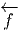(ω). On l’appelle en général
“pull back” de ω par f.
Quelques remarques sur les notations : on peut trouver commode d’utiliser de
nouveau le symbole df et d’écrire tout simplement (en un point P donné, non
explicitement indiqué par la notation)
(P)] est bien défini. On obtient ainsi une
1-forme differentielle sur M qu’on notera f∗ω ou 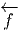(ω). On l’appelle en général
“pull back” de ω par f.
Quelques remarques sur les notations : on peut trouver commode d’utiliser de
nouveau le symbole df et d’écrire tout simplement (en un point P donné, non
explicitement indiqué par la notation)
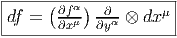
et donc de considérer df comme un élément de Tf(P)N ⊗ TP ∗M. La
matrice (∂fα∕∂xμ) est la matrice jacobienne de l’application f. Attention,
df, ici, n’est pas une 1-forme puisque f n’est pas une fonction à valeurs
dans le corps des scalaires mais une application entre deux variétés. Il
ne semble pas nécessairement utile de vouloir à tout crin introduire de
nouvelles notations chaque fois qu’une fonction de plusieurs variables donne
naissance à des applications différentes lorsqu’on décide de geler l’un ou
l’autre de ses arguments ! La notation “différentielle” précédente est
une généralisation directe de la notation désignant la différentielle d’une
fonction à valeurs réelles. Ici, df doit être considérée comme une application
bilinéaire qu’on peut noter (.,df,.) dont l’ une des restrictions coïncide
avec 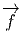 et l’autre avec 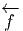. Si on choisit τ ∈ Tf(P)∗N et v ∈ T
P M, on voit
que
La notation suivante est également très commode :
Si on choisit un repère mobile e = Λ
= Λ β∂
β dans N et un co-repère mobile
e
β∂
β dans N et un co-repère mobile
e = L
ν
= L
ν dxν dans M, on pourra écrire également
dxν dans M, on pourra écrire également
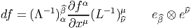
et considérer la quantité f
 = (Λ−1)
α
= (Λ−1)
α (∂fα∕∂xμ)(L−1)
(∂fα∕∂xμ)(L−1) μ comme les
éléments de la matrice jacobienne de f par rapport au choix de deux repères
mobiles.
μ comme les
éléments de la matrice jacobienne de f par rapport au choix de deux repères
mobiles.
Nous venons de voir que les 1-formes de N peuvent être “rappelées” sur M à
l’aide de 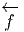 :
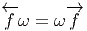
Il
en va de même des p-formes et on définit, pour ω ∈ ΩpN, la p-forme 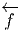(ω) ∈ ΩpM
par l’égalité
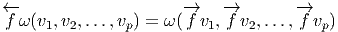
avec v1,v2,…,vp ∈ TM.
Nous laissons au lecteur le soin de démontrer les propriétés suivantes :
1.8 Dérivées de Lie
La notion usuelle de dérivée d’une fonction numérique f nous permet
de préciser la notion de variation locale de cette fonction lorsque son
argument croît ou décroît. Lorsque l’argument se déplace sur une variété de
dimension supérieure à 1, la variation ne sera définie que si on précise dans
quelle direction se déplace le point (l’argument). En d’autres termes, la
généralisation de la notion de dérivée invoque obligatoirement la notion de
vecteur tangent. La dérivée d’une fonction f : M → ℝ par rapport à un
champ de vecteurs X se note LXf et est tout simplement définie par
l’égalité
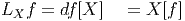
Ainsi, la différentielle de f “code” toutes les variations possibles, alors que la
dérivée de f dans la direction X est obtenue en évaluant la différentielle de f sur
le vecteur X.
Cette notion de dérivée se généralise au cas où f n’est plus une fonction sur
M à valeurs réelles mais un champ t de tenseurs quelconques (ou même, comme
on le verra plus tard, une section d’un fibré quelconque au-dessus de M). On a
envie de donner un sens à la limite de t(x+ϵX)−t(x)
ϵ lorsque ϵ tend vers 0. La
quantité correspondante se note toujours LXt et s’appelle dérivée de Lie du
tenseur t par rapport au champ de vecteurs X. C’est un tenseur de même type
que t. On veut que LX soit une dérivation de l’algèbre tensorielle, c’est-à-dire
qu’on impose
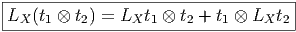
où
t1 et t2 sont des tenseurs quelconques. Pour définir complètement LX il suffit de
préciser la valeur de LXY lorsque Y est un champ de vecteurs (contravariants) et
de LXω lorsque ω est une 1-forme (champ de vecteurs covariants). Dans le
premier cas on pose
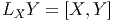
Par
exemple,
Dans le second cas (action de L sur les 1-formes), on définit LXω par la
relation
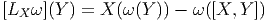
où
Y est, comme X, un champ de vecteurs sur M. Nous laissons le soin au lecteur
de démontrer que cette définition, ainsi que la propriété de dérivation,
conduit à la relation suivante caractérisant l’action de LX sur les formes
différentielles :
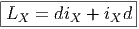
Cette dernière propriété peut d’ailleurs servir de définition. Il est alors immédiat
de vérifier que LX est une dérivation de l’algèbre des formes différentielles
puisque d et iX sont des dérivations graduées. LX est une “vraie” dérivation et
non une dérivation graduée : le signe (−1) potentiel, dans la règle de Leibniz,
disparaît.
De
plus LX ne modifie pas le degré des formes puisque d et iX agissent en sens
contraires. La relation précédente conduit immédiatement à la formule
explicite
Le cas particulier où ω est une 1-forme se retrouve aussi aisément. Notons que,
dans ce dernier cas, si eμ et eμ désignent deux repères duaux l’un de l’autre (un
repère mobile et le co-repère mobile dual), on a
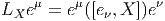
et
en particulier
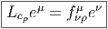
En
coordonnées locales, lorqu’on choisit un repère naturel, on peut écrire
ω = 1∕k!ωμ1…μkdxμ1 ∧… ∧ dxμk et on obtient
Dans le cas des formes, la définition de la dérivée de Lie implique
immédiatement que LX commute avec d (car d2 = 0), ainsi qu’avec i
X (puisque
iviv = 0), et que, par ailleurs
Enfin, si f est une application différentiable et ω une forme différentielle, on
voit que
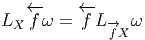
Nous terminons ce paragraphe en montrant que la dérivée de Lie du tenseur
de Kronecker δ = eμ ⊗ eμ est nulle dans toutes les directions. En effet
1.9 Flots
Un flot sur la variété M est un sous-groupe differentiable à un paramètre {ϕt} de
difféomorphismes de M : on suppose que pour tout t réel, l’application
t ∈ ℝ ϕt ∈ Diff(M) est un homomorphisme de groupe et que l’application
(t,P) ∈ ℝ × M
ϕt ∈ Diff(M) est un homomorphisme de groupe et que l’application
(t,P) ∈ ℝ × M ϕt(P) ∈ M est différentiable.
ϕt(P) ∈ M est différentiable.
La trajectoire du flot aussi appelée courbe intégrale du flot passant par le
point P ∈ M est la courbe t ϕt(P). L’application linéaire tangente à cette
courbe associe au vecteur unité 1 de R (identifié avec son espace tangent en 0) un
vecteur tangent en Q = ϕt(P) ∈ T(M,Q). Ce vecteur tangent en Q ne dépend que
du flot. En effet, les propriétés d’homomorphisme ϕt1+t2 = ϕt1 ∘ ϕt2, et de
bijectivité de ϕf , montrent que si deux trajectoires passent par le même point Q,
c’est à dire si ϕt(P1) = ϕt2(P2), avec t ≥ t2 par exemple, on peut poser t1 = t−t2
et P2 = ϕt1(P1), ce qui montre que les vecteurs tangents en Q à ces deux
trajectoires coïncident. Le vecteur tangent obtenu, notons le X(Q), définit un
champ de vecteurs X quelquefois désigné sous le nom de champ des vitesses du
flot.
ϕt(P). L’application linéaire tangente à cette
courbe associe au vecteur unité 1 de R (identifié avec son espace tangent en 0) un
vecteur tangent en Q = ϕt(P) ∈ T(M,Q). Ce vecteur tangent en Q ne dépend que
du flot. En effet, les propriétés d’homomorphisme ϕt1+t2 = ϕt1 ∘ ϕt2, et de
bijectivité de ϕf , montrent que si deux trajectoires passent par le même point Q,
c’est à dire si ϕt(P1) = ϕt2(P2), avec t ≥ t2 par exemple, on peut poser t1 = t−t2
et P2 = ϕt1(P1), ce qui montre que les vecteurs tangents en Q à ces deux
trajectoires coïncident. Le vecteur tangent obtenu, notons le X(Q), définit un
champ de vecteurs X quelquefois désigné sous le nom de champ des vitesses du
flot.
Puisque le flot choisi définit un champ des vitesses, il définit également une
dérivée de Lie par rapport à ce champ de vecteurs.
On peut démontrer qu’inversement, un champ de vecteurs sur une variété
définit un flot local, c’est à dire qu’il ne sera en général défini que sur un ouvert
strictement inclus dans ℝ × M ; si cette inclusion devient une égalité, le champ
de vecteur est dit “complet” et il engendre un flot : les diffeomorphismes ϕt sont
alors définis quel que soit t.
1.10 Orientation – Elément de volume
Déterminant – Intégration
En géométrie élémentaire, l’orientation d’un espace vectoriel réel est spécifiée par
le choix d’une base ℬ (choix ordonné d’un système libre et générateur). Le
choix d’une autre base ℬ′ détermine un isomorphisme g qui envoie les
vecteurs de ℬ sur les vecteurs de ℬ′. On dit que g préserve l’orientation si
det g > 0 et renverse l’orientation si det g < 0. Dans le premier cas on dit
que ℬ et ℬ′ ont la même orientation ; dans le second cas, ℬ et ℬ′ ont
des orientations opposées. On peut alors répartir les bases de l’espace
vectoriel en question en deux classes d’équivalence correspondant aux deux
orientations possibles. Afin de généraliser cette discussion au cadre des
variétés, il est utile de reformuler ce qui précède en terme de formes
extérieures. Nous allons donc travailler avec les bases duales et poser
eμ′ = f(eμ).
Soit ℬ∗ = {e1,e2,…,en} et ω = e1 ∧ e2 ∧ ∧ en.
∧ en.
Soit ℬ′∗ = {e1′,e2′,…,en′} avec eμ′ = f(eμ) et ω′ = f(e1) ∧ f(e2) ∧ ∧ f(en).
L’espace des formes extérieures de degré n sur un espace vectoriel de dimension
n est un espace vectoriel de dimension 1. Les formes ω et ω′ sont donc
proportionnelles et le coefficient de proportionnalité n’est autre que le
déterminant de f : ω′ = (det f)ω. Nous laissons au lecteur le soin de retrouver la
définition élémentaire des déterminants en écrivant eμ′ = Λ
μμ′eμ.
∧ f(en).
L’espace des formes extérieures de degré n sur un espace vectoriel de dimension
n est un espace vectoriel de dimension 1. Les formes ω et ω′ sont donc
proportionnelles et le coefficient de proportionnalité n’est autre que le
déterminant de f : ω′ = (det f)ω. Nous laissons au lecteur le soin de retrouver la
définition élémentaire des déterminants en écrivant eμ′ = Λ
μμ′eμ.
L’orientation de l’espace vectoriel qui était définie par le choix de ℬ peut tout
aussi bien se définir par le choix de la n-forme ω. Deux n-formes ω et ω′
(obligatoirement proportionnelles) définissent la même orientation si le coefficient
de proportionnalité est positif et deux orientations de sens contraire si le
coefficient en question est négatif. Nous pouvons maintenant passer au cas des
variétés. Nous venons de voir que l’orientation, en chaque point P de M, de
l’espace tangent TP M, est équivalente au (ou définie par le) choix d’une n-forme
extérieure en ce point. On pourrait donc naïvement penser que, pour définir une
orientation globale de la variété M, il suffit de choisir une n-forme différentiable
ω. Le problème est que, si ω s’annule en un point, l’orientation cesse d’être définie
en ce point ! Pour pouvoir parler d’orientation de façon globale, il faut
donc qu’il soit possible de choisir une n-forme différentielle sur M qui
ne s’annule nulle part. Ceci n’est pas toujours possible : on dit que la
variété est orientable ou non orientable suivant les cas. Tout le monde
connaît l’exemple fameux du ruban de Moebius ou de la bouteille de
Klein.
On appelle “élément de volume” sur M le choix d’une n-forme ω sur M qui ne
s’annule nulle part (ce qui suppose, par définition, que M soit orientable). On
note [ω] l’ensemble des éléments de volume proportionnels à ω, avec un coefficient
de proportionnalité positif et [−ω] l’ensemble des éléments de volume
proportionnels à ω, avec un coefficient de proportionnalité négatif. Une variété
orientable possède donc deux orientations possibles, l’une quelconque d’entre elles
étant caractérisée par le choix d’un élément de volume appartenant à l’une des
deux classes possibles. Soient maintenant M et N deux variétés différentiables de
même dimension n et f un difféomorphisme de M dans N ; on suppose M et N
orientables et orientées par le choix des éléments de volume ωM et ωN. On dit que
f préserve l’orientation si et seulement si  (ωN) ∈ [ωM] et renverse l’orientation
si 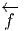(ωN) ∈ [−ωM].
(ωN) ∈ [ωM] et renverse l’orientation
si 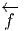(ωN) ∈ [−ωM].
1.10.1 Orientation – Partition de l’unité
Notre but, dans ce paragraphe, est d’introduire la notion d’intégration des formes
différentielles. Comme d’habitude, on va commencer par définir cette notion
pour l’espace numérique ℝn, puis, grâce à un système de cartes, on va
pouvoir généraliser la construction au cas des variétés. On suppose le
lecteur familier avec la notion d’intégrale (de Riemann) sur ℝn. Soit f
une fonction (numérique) c’est-à-dire une fonction – que nous supposons
différentiable – de ℝn à valeurs réelles. Nous supposons, de plus, que f est à
support compact. Son intégrale est notée ∫
ℝnf ou ∫
ℝnf(x)dnx, comme
d’habitude. Choisissons maintenant une orientation sur ℝn et considérons la
n-forme
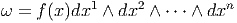
où
dx1 ∧ dx2 ∧ ∧ dxn est une n-forme positive pour l’orientation choisie. On pose
simplement
∧ dxn est une n-forme positive pour l’orientation choisie. On pose
simplement
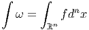
Notons que la définition du membre de gauche dépend de l’orientation choisie ;
en d’autres termes, on peut identifier les deux notations et concepts en
posant
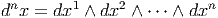
mais il faut bien noter que l’identification des notations dépend du choix d’une
orientation car l’intégrale d’une n-forme dépend de l’ordre x1,x2,…,xn
alors que l’intégrale de Riemann d’une fonction f n’en dépend pas. Soit
T un difféomorphisme de ℝn, c’est-à-dire un changement de variables
xμ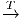yμ.
Notre étude générale des formes différentielles implique en particulier
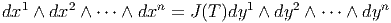
où
J(T) = det(∂xμ∕∂yν) est le jacobien (le déterminant de la matrice jacobienne) de
l’application T. On a donc
Mais on sait bien que
Donc si  ω désigne l’image réciproque de ω, on voit que
ω désigne l’image réciproque de ω, on voit que  ω = ±∫
ω suivant que
T préserve ou non l’orientation : l’intégrale d’une n-forme est invariante sous le
groupe des difféomorphismes qui préservent l’orientation.
Passons maintenant au cas des variétés. Soit M une variété de dimension n et
ω une n-forme à support compact. Supposant la variété orientable, on choisit une
orientation [M] et une partition de l’unité {ρα}α∈I subordonnée à un atlas
{(Uα,φα)}α∈I, c’est-à-dire qu’on se donne une famille de fonctions différentielles
non négatives ρα telles que le support de ρα soit contenu dans Uα et
telles que ∑
ρα = 1 (chaque point de M doit posséder un voisinage dans
lequel la somme précédente est une somme finie). L’existence d’une telle
partition de l’unité, pour une variété différentiable, est un théorème
(que nous ne démontrons pas) qui permet, dans de nombreux cas, de
passer des résultats locaux (valables dans une carte) aux résultats globaux
(valables pour toute la variété M). On définit l’intégrale de ω sur [M] par
l’égalité
ω = ±∫
ω suivant que
T préserve ou non l’orientation : l’intégrale d’une n-forme est invariante sous le
groupe des difféomorphismes qui préservent l’orientation.
Passons maintenant au cas des variétés. Soit M une variété de dimension n et
ω une n-forme à support compact. Supposant la variété orientable, on choisit une
orientation [M] et une partition de l’unité {ρα}α∈I subordonnée à un atlas
{(Uα,φα)}α∈I, c’est-à-dire qu’on se donne une famille de fonctions différentielles
non négatives ρα telles que le support de ρα soit contenu dans Uα et
telles que ∑
ρα = 1 (chaque point de M doit posséder un voisinage dans
lequel la somme précédente est une somme finie). L’existence d’une telle
partition de l’unité, pour une variété différentiable, est un théorème
(que nous ne démontrons pas) qui permet, dans de nombreux cas, de
passer des résultats locaux (valables dans une carte) aux résultats globaux
(valables pour toute la variété M). On définit l’intégrale de ω sur [M] par
l’égalité
où
la quantité ∫
Uαραω signifie en fait ∫
ℝn(φα−1)∗(ρ
αω) pour une trivialisation locale
φα : Uα → ℝn préservant l’orientation. On se ramène ainsi au cas de
ℝn.
L’orientation étant choisie une fois pour toutes, on note ∫
M et non plus ∫
[M]
l’intégrale correspondante. Il reste alors à démontrer que la définition adoptée ne
dépend pas des cartes choisies. . .
On appelle élément de volume sur M (de dimension n) ou forme volume un
élément quelconque ϵ de ΩnM. Le volume de M, supposée compacte, est alors
égal, par définition, à ∫
Mϵ. Il faut bien noter que sur une variété quelconque
(orientée), on intègre des n-formes, et non des fonctions, à moins, précisément,
d’avoir choisi un élément de volume ϵ une fois pour toutes, auquel cas on peut
évidemment poser ∫
Mf = ∫
Mfϵ où f ∈ C∞(M). Un cas particulièrement
important à considérer est celui où la forme volume est associée canoniquement
au choix d’une structure riemannienne (voir section 1.11) sur la variété en
question.
1.11 Variétés riemanniennes (propriétés élémentaires)
En toute logique, cette section ne devrait pas se trouver dans ce premier chapitre
consacré aux variétés différentielles. En effet, la définition de la structure de
variété riemannienne est liée à un cas particulier de restriction d’espace fibré (les
espaces fibrés font l’objet du chapitre 4). Cela dit, pour des raisons à
la fois historiques et pédagogiques, il est sans doute préférable que le
lecteur se familiarise d’ores et déjà avec certaines propriétés des variétés
riemanniennes.
En géométrie élémentaire, on étudie d’abord les propriétés linéaires et affines
et on passe, ensuite, aux notions métriques. Il en va de même dans l’étude des
variétés. Une variété différentiable est encore un objet flasque et mou. . . la
donnée d’une métrique rigidifie l’espace considéré et permet, d’une part, de parler
de norme des vecteurs tangents et, d’autre part, de parler de distances entre
points. La définition élémentaire d’une métrique g, sur une variété différentiable
M, est la suivante : c’est un champ de tenseurs covariants symétriques
de degré deux (en général on impose également une condition de non
dégénérescence). Si {xμ} désigne un système de coordonnées locales, on
écrira
La
métrique g est quelquefois notée ds2 = g
μνdxμdxν et appelée “élément de
longueur” ou tenseur métrique. Si {eα} est un co-repère mobile, on pourra écrire
également g = gαβeα ⊗ eβ. En tout point P de M on a donc un produit scalaire
gP défini sur TP M et permettant de calculer le produit scalaire gP (v,w) de deux
vecteurs quelconques v et w appartenant à l’espace tangent en ce point.
On a déjà dit que g devait être symétrique (c’est-à-dire gμv = gνμ, ou
gP (v,w) = gP (w,v)). Dans la plupart des cas, on impose également à g d’être non
dégénérée : le déterminant de la matrice (gμv) est supposé non nul en tout
point P et on peut donc inverser cette matrice. On obtient ainsi (gμν)
avec gμνg
νρ = δρμ. Cela définit un produit scalaire sur l’espace cotangent
qu’on pourra noter ♯g (et quelquefois g−1) et même parfois g s’il n’y a pas
d’ambiguïté) :
Une variété différentiable munie d’une métrique (non dégénérée) est, par
définition, une variété riemannienne. Nous n’avons pas imposé au produit scalaire
défini par (gμv) d’être positif et nous ne l’imposerons pas. En général, une forme
bilinéaire symétrique est caractérisée par sa signature (p,q) – le nombre de signes
+(p) et de signes −(q) obtenus lorsqu’on la diagonalise. Si on tient à préciser
que la signature est de type (p, 0) ou (0,p), on dira que la variété est
proprement riemannienne. Si on tient à préciser que la signature est de type
(p, 1) ou (1,p), on dira que la variété est lorentzienne (on dit aussi, dans
ce dernier cas, que la signature est hyperbolique). Les cas riemanniens
et lorentziens sont particulièrement importants en physique mais nous
n’avons pas besoin de nous restreindre à ce cadre pour l’essentiel de ce qui
suit.
∙ Pour une variété riemannienne (M,g) orientée, on peut définir une forme de
volume canonique de la façon suivante. Soit {e } un repère mobile orthonormal,
c’est-à-dire g(e
} un repère mobile orthonormal,
c’est-à-dire g(e ,e) = η
,e) = η
 , avec η
, avec η
 = ±δ
= ±δ
 , le signe ± dépendant de la signature
de la métrique. Pour l’instant nons pouvons supposer que l’espace est proprement
riemannien, et orienté, mais à la fin de cette section, nous verrons comment
compléter les propriétés qui suivent lorsque la signature de la métrique est
quelconque, et plus particulièrement lorsqu’elle est hyperbolique. Désignant par
{e
, le signe ± dépendant de la signature
de la métrique. Pour l’instant nons pouvons supposer que l’espace est proprement
riemannien, et orienté, mais à la fin de cette section, nous verrons comment
compléter les propriétés qui suivent lorsque la signature de la métrique est
quelconque, et plus particulièrement lorsqu’elle est hyperbolique. Désignant par
{e } le co-repère dual du repère mobile choisi, l’élément de volume riemannien
est
} le co-repère dual du repère mobile choisi, l’élément de volume riemannien
est
Soit {σα} un autre repère, non nécessairement orthonormal, et Λα la
matrice de passage, c’est-à-dire σα = Λα
la
matrice de passage, c’est-à-dire σα = Λα e. Alors gαβ = ΛαΛ
β
e. Alors gαβ = ΛαΛ
β g
g , ce qui
implique
, ce qui
implique
mais | det(g
 )| = 1 puisqu’on a supposé la base {e
)| = 1 puisqu’on a supposé la base {e } orthonormale et
donc
Or
Ainsi
où
le symbole δα1α2…αn12…n désigne ± suivant que α
1α2…αn est une permutation paire
ou impaire de 1, 2, 3…n et il est égal à zéro dans les autres cas.
} orthonormale et
donc
Or
Ainsi
où
le symbole δα1α2…αn12…n désigne ± suivant que α
1α2…αn est une permutation paire
ou impaire de 1, 2, 3…n et il est égal à zéro dans les autres cas.
En particulier, si {σα} désigne un repère naturel ∂ __
∂xμ, on a g = gμνdxμ ∧dxν
et
Notons également que, dans un repère orthonormé, la racine carrée précédente
vaut 1 et donc ϵα1α2…αn = δα1α2…αn12…n En particulier ϵ
12…n = 1.
∙ La métrique g permet également d’établir un isomorphisme canonique entre
l’espace tangent TM et l’espace cotangent T∗M. Cette propriété est évidente
puisqu’en chaque point, l’existence d’un produit scalaire permet d’identifier les
espaces vectoriels TP M avec TP ∗M. En d’autres termes, on peut “monter” et
“descendre” les indices à l’aide de la métrique : au vecteur v = vμe
μ on associe
la 1-forme bv = v
μeμ définie par v
μ = gμνvν ( {eμ} désignant la base duale de
{eμ}). Inversement, à la 1-forme σ = σμeμ on associe le vecteur ♯σ = σμe
μ avec
σμ = gμvσ
ν. On peut écrire 〈bv
1,v2〉 = g(v1,v2) et 〈σ, ,♯σ2〉 = (σ1,σ2). Les
isomorphismes ♭ et ♯ sont appelés isomorphismes musicaux (pour des raisons
évidentes !).Cela dit, les physiciens choisissent en général une métrique une fois
pour toutes et décident donc de passer sous silence ces isomorphismes musicaux.
En d’autres termes, ils identifient v et ♭v ainsi que σ et ♯σ et écrivent tout
simplement v = vμe
μ = vμeμ ou σ = σ
μeμ = σμe
μ. Pour des raisons analogues
ils écrivent g = gμveμ ⊗ eν = gμve
μ ⊗ ev (mais il faut bien entendu se
rappeler que (gμv) est la matrice inverse de (gμv). Les isomorphismes
musicaux permettent, de la même façon, d’identifier les tenseurs covariants
et contravariants de même rang . Attention, lorsqu’on n’utilise pas de
métrique pour monter ou baisser les indices, il n’y a pas de raison de faire
attention à la position relative des indices covariants et contravariants (par
exemple, on peut parler de Tνρμ sans dire s’il s’agit de Tμ
νρ, de Tνρμ ou de
Tνμ
ρ). Les trois types de composantes correspondent d’ailleurs à des objets
différents puisque on travaille, suivant les cas, dans TM ⊗ T∗M ⊗ T∗M,
T∗M ⊗ T∗M ⊗ TM ou T∗M ⊗ TM ⊗ T∗M. Par contre, si on utilise la métrique
pour procéder à des identifications, il faut faire attention aux positions
relatives des indices haut et bas ! Ainsi, par exemple, Tμνρ désignera
gμμ′Tμ′
νρ. Tout ceci est assez trivial, mais peut être fallait-il le dire une
fois ?
Lorsqu’on a choisi une métrique, on écrira donc abusivement (sans utiliser la notation
♭ et ♯), par exemple T = Tμvρeμ ⊗ev ⊗eρ = T
μνρeμ ⊗e
v ⊗eρ = Tμvρe
μ ⊗ev ⊗eρ = …
Les isomorphismes musicaux sont quelquefois simplement désignés par
le même symbole g que la métrique elle même, le nombre d’arguments
permettant de décider si on parle des isomorphismes en question ou de la
métrique. Par exemple, on peut noter g(eμ) = gμveν et g(eμ) = gμve
ν.
Ceci est en accord avec les notations précédentes puisque par exemple
g(v) = g(vμe
μ) = vμg(e
μ) = vμg
μveν = v
veν.
Avec ces notations, nous avons alors g(v,w) = 〈g(v),w〉 = 〈g(w),v〉 = g(w,v).
∙ L’existence d’une métrique permet non seulement de calculer le produit
scalaire de deux vecteurs (ou de deux 1-formes) mais de contracter n’importe quel
tenseur d’ordre k covariant, contravariant ou partiellement covariant et
contravariant avec n’importe quel autre tenseur d’ordre k. On utilisera encore la
notation 〈|〉 pour écrire ces contractions de type assez général. Plutôt que
de décrire les différents cas, il suffit de dire, en termes imagés, qu’on
“monte” tous les indices du premier à l’aide de la métrique, qu’on “descend”
tous les indices du second et qu’on contracte complètement les objets
obtenus. Par exemple, si S = Sμνρeμ ⊗ eν ⊗ e
ρ et T = Tμνρeμ ⊗ e
ν ⊗ eρ
on fabrique Sμvρ′ = gρ′ρSμvρ et Tμ′νρ = gμ′μT
μνρ. On peut alors calculer
〈S,T〉 = SμνρT
μνρ. En particulier, si {φ1,φ2,…,φk} désignent une famille de
1-formes et {ψ1,ψ2,…,ψk} en désigne une autre, on peut vérifier que cette
définition conduit à
Dans le sous-cas particulier où ces deux familles coïncident et où on suppose la
famille {φk} orthonormée, il vient
∙ Lorsque la signature de la métrique n’est pas proprement riemannienne, c’est
à dire lorsqu’elle est de type (p,q), il faut supposer que la variété admet une
orientation temporelle et qu’elle est temporellement orientée. Dans le
cas usuel de l’espace-temps de la physique (signature (3, 1)), on utilisera
des indices 0, 1, 2, 3, comme c’est l’usage, plutôt que 1, 2, 3, 4 ; on posera
alors
La
différence avec le cas proprement euclidien vient du fait qu’il faut faire attention
aux signes lorsqu’on “monte” les indices. Par ailleurs, det(g ) = (−1)q.
Les formules précédentes restent donc valables et on aura toujours, par
exemple,
mais par contre
Plus généralement, nous avons vu que ϵα1α2…αn =
) = (−1)q.
Les formules précédentes restent donc valables et on aura toujours, par
exemple,
mais par contre
Plus généralement, nous avons vu que ϵα1α2…αn =  δα1α2…αn12…n, mais si
on “monte” ces indices (à l’aide de la métrique) le résultat va dépendre de la
signature, plus particulièrement du nombre q de signes “−” dans la métrique. On
obtient donc
δα1α2…αn12…n, mais si
on “monte” ces indices (à l’aide de la métrique) le résultat va dépendre de la
signature, plus particulièrement du nombre q de signes “−” dans la métrique. On
obtient donc
Citons quelques contractions utiles :
Lorsque la variété est lorentzienne, avec une signature de type (3, 1), on obtient
en particulier
∙ Pour terminer, notons que l’existence d’une métrique permet d’associer à la
différentielle df d’une fonction f, un champ de vecteurs, le gradient de f défini
par gradf = ♯df. Ainsi, dans un repère naturel, on écrira
Encore une fois, la présente section consacrée aux variétés riemanniennes n’est
destinée qu’à introduire certaines notations utiles et quelques notions
élémentaires. Nous reviendrons plus en détail sur les variétés riemanniennes à la
fin du chapitre consacré aux connexions.
1.12 Divers
Nous regroupons dans ce paragraphe un certain nombre de notions et de
commentaires qui peuvent être considérés comme un peu moins élémentaires que
ce qui précède ; cela ne signifie pas qu’ils sont moins “importants” mais
simplement que nous utiliserons peu ou pas ces concepts dans la suite de
l’ouvrage. On se contente donc ici de présenter quelques définitions de façon à
suggérer au lecteur des lectures plus approfondies et à donner quelques idées
intuitives.
1.12.1 Compléments sur les dérivations d’algèbre
L’ensemble des dérivations de l’algèbre associative A se note DerA. Rappelons
qu’une dérivation est une application linéaire v de A dans A telle que
v[fg] = v[f]g + fv[g] avec f,g ∈A. Il est facile de voir que la somme
de deux dérivations est une dérivation, par contre le produit de deux
dérivations n’est pas une dérivation (dans les cas où on peut le définir,
c’est un opérateur du “second ordre” ). Il est intéressant de savoir si
l’opérateur w défini par w = hv avec h ∈A et v ∈ DerA est, ou non, une
dérivation. En d’autres termes, on veut savoir si l’espace DerA est stable
lorsqu’on multiplie (à gauche) ses éléments par des éléments de A. Dans
l’affirmative, on dit que DerA est un module sur A. La réponse est oui, mais
seulement dans le cas où A est commutative. En effet, prenons f et g dans A.
Alors, (hv)[fg] = h(v[fg]) = h(v[f]g + fv[g]) = hv[f]g + hfv[g] mais
(hv)[f]g + f(hv)[g] = hv[f]g + fhv[g]. Ces deux expressions ne coïncident que si
hf = fh.
Conclusion : L’ensemble des dérivations d’une algèbre associative n’est pas, en
général, un module sur cette algèbre, sauf si cette cette dernière est commutative.
Il est facile de voir que DerA est un module sur le centre de A, centre qui peut
être assez petit...
Par contre, l’ensemble des dérivations est toujours une algèbre de Lie : on
peut y définir une loi de composition interne (notée [, ]) non associative et
anti-commutative ([u,v] = −[v,u]), qui vérifie l’identité suivante (l’identité de
Jacobi) :
Rappelons que l’ensemble des champs de vecteurs sur une variété n’est autre
que l’algèbre de Lie DerC∞(M).
Le fait que l’ensemble des dérivations de A soit un module sur A lorsque A est
commutative admet une généralisation supersymétrique. Supposons que A soit
une algèbre ℤ2-graduée. Chaque élément a de A peut donc s’écrire comme
somme d’un élément pair (#a = 0) et d’un élément impair (#a = 1). On définit
les dérivations graduées (ou super-dérivations ) des algèbres ℤ2-graduées comme
les dérivations usuelles, mais en introduisant un signe. On dit qu’une
super-dérivation est paire si c’est une dérivation, au sens usuel du terme. On dit
qu’une super-dérivation est impaire si c’est une application linéaire de A dans A
telle que v[fg] = v[f]g + (−1)#ffv[g]. On introduit donc alors une ℤ
2 graduation
pour les super-dérivations et on réunit les deux types de formules de la façon
suivante :
avec f,g ∈A. En pratique, il suffit d’utiliser la règle dite “Règle de Milnor”
disant qu’il faut introduire un signe “−” chaque fois qu’on doit commuter deux
éléments impairs.
L’ensemble des super-dérivations d’une algèbre A ne constitue pas, en général,
un module sur A, sauf lorsque A est commutative graduée (on dit aussi
super-commutative ), c’est à dire lorsque fg = (−1)#f#ggf. Par contre l’ensemble
des dérivations graduées constitue toujours un module sur le super-centre de A
(l’ensemble des éléments de A qui commute – au signe près – avec A) et il
constitue également une super-algèbre de Lie , c’est à dire que les dérivations
graduées super-anticommutent :
et
vérifient l’identité de Jacobi graduée
1.12.2 Cohomologie de De Rham
Nous avons vu que l’opérateur d satisfait d2 = 0 et envoie ΩkM dans
Ωk+1M. Soit Zk le noyau de d, c’est-à-dire Zk = {ω ∈ ΩkM tq dω = 0}.
Les éléments de Zk sont appelés cocycles de De Rham de degré k (ou
formes fermées). Soit Bk l’image par d de Ωk−1M dans ΩkM, c’est-à-dire
Bk = {ω ∈ ΩkM tq ∃τ ∈ Ωk−1 avec ω = dτ}. Les éléments de Bk sont les
cobords de De Rham de degré k ou formes exactes . Le fait que d2 = 0 implique
l’inclusion Bk ⊂ Zk.
Il résulte de la linéarité de d que Zk et Bk sont stables par addition, ce sont
donc des groupes abéliens ; on peut alors considérer le groupe quotient
Hk = Zk∕Bk qu’on appelle groupe de cohomologie (de De Rham) de degré
k. On peut calculer, pour toute variété, les groupes H0,H1,…,Hn. Ces
groupes fournissent, en quelque sorte une “mesure” de la non-trivialité de la
topologie de la variété M. En effet, tous ces groupes sont triviaux (se
réduisent à l’élément neutre 0) dans le cas de l’espace numérique ℝn,
ce que le lecteur sait déjà puisque, dans un autre contexte, celui de la
théorie des équations différentielles sur ℝn, on montre de façon élémentaire
que, pour résoudre une équation df = 0, il faut poser f = dg (Lemme de
Poincaré).
1.12.3 Homologie de De Rham
La définition de l’homologie de De Rham est plus délicate que celle de la
cohomologie. De façon à en donner une image intuitive, disons qu’on s’intéresse à
des “morceaux” de la variété M (comptés possiblement avec multiplicité). Un tel
morceau C (techniquement une chaîne ) peut avoir un bord (le bord d’un disque
est un cercle) ou pas de bord (le bord d’un cercle est nul). On peut formellement
additionner les chaînes (avec des coefficients réels, dans le cas présent). On
définit alors un opérateur bord ∂, de carré nul lui aussi (∂2 = 0, le bord d’un
bord est nul) et on peut considérer les cycles (chaînes C dont le bord
∂C est nul) et les bords (chaînes C qui sont le bord de quelque chose
C = ∂D).
Tous les bords étant des cycles, on peut là aussi considérer les cycles Zk de
dimension k modulo les bords Bk et définir les groupes d’homologie Hk = Zk∕Bk.
De façon générale, on parle de cohomologie lorsqu’on a un opérateur de carré nul
(tel d) dont l’action sur un espace vectoriel ℤ-gradué fait croître le degré d’une
unité et d’homologie lorsqu’on a un opérateur de carré nul (tel ∂) dont l’action
fait décroître le degré.
Paradoxalement, la définition de d est plus simple que celle de ∂ (nous avons
passé cette dernière sous silence) alors que l’action de ∂ est plus intuitive, plus
“visuelle” que celle de d. Le lien entre les deux est fournit par le théorème de
Stokes : de façon générale on peut intégrer les k-formes sur les k-chaînes et on
a la propriété
qui
généralise la relation bien connue des physiciens de première année de
nos universités ∫
Σ .d
.d = ∫
V div
= ∫
V div dτ où la surface Σ est le bord du
volume V et où l’intégrale représente le “flux sortant” du champ électrique
dτ où la surface Σ est le bord du
volume V et où l’intégrale représente le “flux sortant” du champ électrique
 .
La dualité entre homologie et cohomologie s’écrit très simplement dans le cas
des variétés compactes ; dans ce cas, on démontre que Hk est isomorphe à
Hn−k où n est la dimension de la variété. Le support visuel intuitif suffit,
en dimension 2, pour calculer l’homologie (et donc la cohomologie) de
quelques variétés très simples. C’est ainsi que, pour la sphère S2 on a
H0(S2) = H
2(S2) = ℝ et H
1(S2) = 0 (tout cercle tracé sur la sphère est le bord
de quelque chose), alors que pour le tore T2, on a H
0(T2) = H
2(T2) = ℝ mais
H1(T2) = ℝ ⊕ ℝ : les deux générateurs de H
1(T2) correspondent respectivement
aux deux types de cercles qu’on peut tracer sur un tore et qui ne “bordent”
rien, c’est-à-dire “ceux qui font un tour”. On appelle nombres de Betti
de la variété M, la dimension bp de Hp(M) considéré comme espace
vectoriel.
.
La dualité entre homologie et cohomologie s’écrit très simplement dans le cas
des variétés compactes ; dans ce cas, on démontre que Hk est isomorphe à
Hn−k où n est la dimension de la variété. Le support visuel intuitif suffit,
en dimension 2, pour calculer l’homologie (et donc la cohomologie) de
quelques variétés très simples. C’est ainsi que, pour la sphère S2 on a
H0(S2) = H
2(S2) = ℝ et H
1(S2) = 0 (tout cercle tracé sur la sphère est le bord
de quelque chose), alors que pour le tore T2, on a H
0(T2) = H
2(T2) = ℝ mais
H1(T2) = ℝ ⊕ ℝ : les deux générateurs de H
1(T2) correspondent respectivement
aux deux types de cercles qu’on peut tracer sur un tore et qui ne “bordent”
rien, c’est-à-dire “ceux qui font un tour”. On appelle nombres de Betti
de la variété M, la dimension bp de Hp(M) considéré comme espace
vectoriel.
1.12.4 Espace des p-vecteurs
Nous avons choisi de développer la notion de produit extérieur en partant du
fibré cotangent , c’est-à-dire que nous avons considéré des produits tensoriels
complètement antisymétriques de vecteurs covariants. Ceci nous a amené
au concept de forme différentielle. Nous aurions pu faire de même en
partant des vecteurs contravariants. Le formalisme est très semblable et les
objets contravariants Ωp(M) correspondant aux formes différentielles
Ωp(M) sont simplement baptisées “p-vecteurs”. On peut alors bien entendu
évaluer une p-forme sur un p-vecteur, le résultat étant une fonction sur
M.
1.12.5 Espace des courants de De Rham
Le lecteur est sans doute déjà familier avec la notion de distribution. Pour les
fonctions numériques sur un compact de ℝn les distributions sont définies comme
dual des fonctions infiniment différentiables. Cet espace contient d’une part des
éléments “réguliers” mais aussi toutes les mesures (en particulier la mesure de
Dirac) et même des objets encore plus singuliers (les dérivées de la distribution de
Dirac par exemple). On peut généraliser la théorie des distributions aux
formes différentielles de degré quelconque sur une variété ; on définit ce
qu’on appelle l’espace des courants de De Rham comme dual (sur ℝ) des
formes différentielles. L’évaluation d’un courant C sur une forme ω est
donc un nombre 〈C,ω〉. Si la variété M est compacte et si ω est une
k-forme, un élément “régulier” peut être représenté par une n − k forme σ
puisque l’évaluation de l’intégrale ∫
Mσ ∧ ω est bien une fonctionnelle
linéaire. L’intégration d’une forme sur une chaîne (théorie de l’homologie),
l’évaluation d’un p-vecteur sur une p-forme suivie de l’intégration sur M de
la fonction obtenue, fournissent aussi des exemples de courants de De
Rham. La théorie de l’homologie de De Rham (opérateur ∂) se généralise
d’ailleurs au cadre des courants et le théorème de Stokes s’écrit dans ce cas
〈∂C,ω〉 = 〈C,dω〉.
1.12.6 Les algèbres de Frölicher – Nijenhuis et de Nijenhuis–Richardson
Nous savons que l’algèbre de De Rham Ω(M), munie du produit extérieur, est
une algèbre commutative graduée.
Nous savons aussi que l’ensemble des dérivations graduées d’une algèbre
commutative graduée constitue une super-algèbre de Lie pour laquelle le crochet
de Lie est donnée par le commutateur (gradué) que nous noterons simplement
[.,.].
En conséquence Der(Ω(M)) est une algèbre de Lie graduée. Reste à identifier
explicitement les éléments de cette algèbre.
Tout d’abord, puisque Ω(M) est ℤ-graduée, on dira qu’une dérivation est de
degré p (qui peut être positif, négatif ou nul) si elle fait passer de Ωk(M) à
Ωk+p(M). On notera Der
p(Ω(M)) l’espace des dérivations de degré p. La dérivée
extérieure est elle-même un élément de Der1(Ω(M).
Soit Ω(M,TM) l’espace des formes différentielles sur M à valeurs dans le fibré
tangent, c’est à dire Ωk(M,TM) = Γ(ΛkT∗M ⊗ TM). Une k-forme K à valeurs
vectorielles s’écrira, dans un repère naturel,
Un résultat du à Richardson et Nijenhuis montre que l’algèbre de Lie graduée
des dérivations (graduées) de l’algèbre de De Rham Ω(M) peut s’identifier à deux
copies de Ω(M,TM) munies de deux crochets différents, connus respectivement
sous le nom de crochet de Nijenhuis-Richardson et crochet de Frölicher-Nijenhuis.
Plus précisément, pour tout toute dérivation D, de degré k de l’algèbre Ω(M) on
peut trouver un unique K ∈ Ωk(M,TM) et un unique L ∈ Ωk+1(M,TM) tels
que
où
ℒK et iL définissent des dérivations que nous allons caractériser un peu plus loin.
Nous ne démontrerons pas le théorème de Richardson et Nijenhuis mais
définirons seulement les dérivations dont il vient d’être question (voir
[7].
Il se trouve que les éléments de Ω(M,TM) peuvent en effet agir par dérivation
sur Ω(M), et ce, de deux façons distinctes.
La première consiste en une généralisation du produit intérieur. Au lieu de
considérer le produit intérieur d’une forme par un vecteur, on remplace le vecteur
par une k-forme à valeurs vectorielles. En effet, soit K ∈ Ωk(M,TM),
L ∈ Ωl(M,TM) et ω une forme différentielle de degré q sur M. On va définir i
Kω,
qui sera une forme différentielle de degré k + (q − 1) (la partie “champ de
vecteurs” présente dans K fait passer de q à q − 1 mais les k indices de forme
demeurent). Soient Xi i ∈{1, 2,…,k + (q − 1) des champs de vecteurs. On
pose
Notons que, agissant sur une fonction (un élément de Ω0(M)), i
K donne zéro. On
peut vérifier que iK défini bien une dérivation. Celle-ci est d’ailleurs de
degré k − 1 ; ainsi iK ∈ Derk−1Ω(M). On peut démontrer que toute
dérivation de l’algèbre de De Rham dont la restriction aux fonctions
est nulle est de cette forme. Le commutateur gradué (dans Der(Ω(M))
de deux dérivations de ce type est une dérivation du même type. Plus
précisément,
où
la forme à valeur vectorielle [K,L]NR est égale à
et
où on généralise l’action de iK sur Ω(M) à une action sur Ω(M,TM)
en posant iK(α ⊗ X) = iK(α) ⊗ X, avec α ∈ Ω(M) et X un champ de
vecteurs. Le crochet [,., ] porte le nom de crochet de Nijenhuis-Richardson.
La deuxième façon d’agir consiste en une généralisation de la dérivée de Lie.
Soit encore K ∈ Ωk(M,TM). On définit ℒ
K par
On
peut vérifier que cet opérateur fournit bien une dérivation de l’algèbre
Ω(M). Cette dérivation est de degré k : ℒK ∈ Derk(Ω(M) (dans le cas
particulier k = 0 on retrouve un résultat connu). On peut démontrer
que
pour une forme à valeurs vectorielles bien déterminée notée [K,L]FN qu’on
appelle crochet de Frölicher-Nijenhuis. Pour des éléments décomposés, on a la
formule de Michor Avant de conclure ce paragraphe, il est utile de définir la notion suivante. Soit
J ∈ Ω1(M,TM), alors le carré gradué de J, pour le crochet de Frölicher-Nijenhuis,
est un élément [J,J]FN de Ω2(M,TM) appelé torsion de Nijenjuis du
vecteur-1-forme J. Pour justifier l’intérêt porté à cette notion, citons seulement le
résultat suivant (nous n’étudierons pas les variétés complexes dans cet
ouvrage) : lorsque J, qui peut s’interpréter géométriquement comme un
champ d’endomorphismes du fibré tangent, est une structure presque
complexe (J2 = −1), l’annulation de sa torsion de Nijenhuis fourni une
condition nécessaire et suffisante pour l’intégrabilité de cette structure
(c’est à dire que, dans ce cas, la structure presque-complexe est en fait,
complexe).

![∂ ∂ ∂
--μ[fg ] =---μ[f]g + f---μ[g]
∂x ∂x ∂x](source7x.png)
![|---------------------|
-v[fg] =-v[f-]g-+-f-v[g-]|](source8x.png)
![[v, w][f ] = (vw )[f] − (wv )[f] = (v μ-∂-[w ν]-∂-− wμ--∂-[vν]-∂--)[f ]
∂xμ ∂xν ∂x μ ∂x ν](source10x.png)

![[eμ,e ν] = 0](source14x.png)

 = f αβ(P )eγ(P )](source18x.png)
![|---------------|
|[eα,eβ ] = fγαβeγ|
-----------------](source19x.png)
![eμ[e ν] = δμν](source20x.png)


![|-------------|
|〈df, v〉 = v[f ]|
---------------](source54x.png)

![d ω(u,v) = u (ω (v)) − v (ω(u)) − ω([u,v])](source58x.png)
![dω(x,y, z) = x(ω (y, z)) − y(ω (x,z)) + z(ω(x,y))
− ω([x,y],z) − ω([y, z],x ) + ω ([x, z],y )](source59x.png)


![de α(eδ,eϵ) = e δ(eα(eϵ)) − eϵ(eα(eδ)) − eα([eδ,eϵ])
= e (δα) − e (δα) − fγeα(e )
δ ϵ ϵγ δ δϵ γ
= 0 − 0 − fδϵδαγ = − fαδϵ](source66x.png)


![∑k
LX ω (X1,...,Xk ) = X (ω (X1, ...,Xk )) − ω (X1,...,[X, Xi],...,Xk )
i=1](source115x.png)

![i = LX iY − iYLX
[X,Y]
[LX ,LY ] = L [X,Y]](source119x.png)
![Leρδ = Le ρeμ ⊗ eμ + eμ ⊗ Le ρeμ
μ μ ν
= [eρ,eμ] ⊗ e + eμ ⊗ fνρe
σ μ μ ν
= f ρμeσ ⊗ e + fνρeμ ⊗ e = 0](source121x.png)


![detg
det(gαβ) = [det(Λ^αα)]2det(g^αβ^) et donc det (Λ ^αα) = |----αβ-|1∕2
detg^αβ^](source160x.png)
![^α 1∕2 −1 α −1
det(Λα) = |det(gαβ)| = [det((Λ )^α)]](source164x.png)


![[u,[v,w ]] + [v,[w, u]] + [w,[u,v]] = 0](source184x.png)
![|-----------------------|
[v,w ] = − (− )#v#w [w, v]
-------------------------](source186x.png)


![|-----------------|
-[iK-,iL-] =-i[K,L]NR|](source196x.png)
![(k−1)(l−1)
[K, L ]NR = iKL − (− 1) iLK](source197x.png)
![ℒK = [iK ,d] = iK d − (− 1)k−1diK](source198x.png)
![[α ⊗ X, β ⊗ Y ]FN = α ∧ β ⊗ [X, Y ] + α ∧ ℒX β ⊗ Y
− ℒY α ∧ β ⊗ X + (− 1)#α(dα ∧ iXβ ⊗ Y + iYα ∧ dβ ⊗ X )](source200x.png)